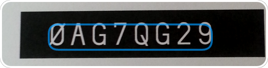
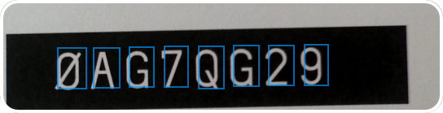

Introduction
Anyline provides an easy-to-use SDK for applications to enable Optical Character Recognition (OCR) on mobile devices.
This API contains a Quick Start Guide for all supported platforms, a detailed description of the Configuration, as well as descriptions and examples for all available Modules.
Supported Platforms
- Android
- iOS
- WP / Windows Phone Edition (available now upon request! Please mail us now)
Extensions
- Cordova Plugin
- Xamarin - Availabe for Android and iOS.
Smart Glasses
First prototypes for both glasses are available on request. The versions include one additional module requiring a special license which cannot be acquired via our customer portal. For more information and a trial license please contact us.
Available Modules
- Barcode: Scan 23 types of international barcode & QR code formats.
- Energy: Scan meter readings of various electric, gas, and water meters.
- MRZ: Reliable scanning of data from passports’ and IDs’ machine readable zones (MRZ)
- Document: Detects document outlines and delivers a high-resolution image
- Order Code: Scan an alphanumeric order code - only available for smart glasses
- Anyline OCR: Create a custom use case with LINE or GRID recognition
Getting Started
This section helps you to get started with the Anyline SDK and provides a brief description of the files included in SDK bundle as well as a requirement description and a Quick Start Guide for all available platforms.
Obtaining an Anyline SDK License Key
The best way to use Anyline is to purchase your personal license in our Anyline Store. Each key is bound to a specific application by the Bundle Identifier (iOS) or the applicationId (Android).
iOS Bundle Identifier
The iOS Bundle Identifier is best found in Xcode in the Project Overview / General.

Android ApplicationId
The Android applicationId is found in the build.gradle file as android / defaultConfig / applicationId.

If you do not use the applicationId in your build.gradle file you may use the package name shown in the AndroidManifest.xml.

Android Getting Started
The Android bundle contains the following parts:
- Anyline-Font: contains a beautiful Machine-Readable Font to delight computers and humans alike
- AnylineSDK: contains the anyline-android-release.aar library
- AnylineSDKExamples: contains a simple app where an example for each module is implemented - it can be installed right away
- Documentation: contains the java doc for the anyline-sdk, and this web documentation
- LICENSE: third party license agreements
- README: contains a quick start - setup and module description
- RELEASE_NOTES: information about any changes
Sample Data
In order to try out our examples app yourself, you can download this file with test images or scan things in the real world ;)
Requirements
- Android device with SDK >= 15
- decent camera functionality (recommended: 720p and adequate auto focus)
Quick Start Guide
1. Add AnylineSDK as dependency
Via Maven
Add AnylineSDK to the dependencies in build.gradle
//root section of the file
repositories {
//add the anyline maven repo
maven { url 'https://anylinesdk.blob.core.windows.net/maven/'}
}
dependencies {
//add the anyline sdk as dependency (maybe adapt version name)
compile 'io.anyline:anylinesdk:3.7.0@aar'
//... your other dependencies
}
Or via local copy of the aar
Copy the .aar to the libs directory of your project (app/libs) and adapt build.gradle.
Add AnylineSDK to the dependencies in build.gradle
//root section of the file
repositories {
flatDir {
dirs 'libs'
}
}
dependencies {
compile(name:'anylinesdk-3.7.0', ext:'aar')
//... your other dependencies
}
2. Limit the build to the provided architectures
We currently only provide our SDK for the architectures armeabi-v7a and x86. This is sufficient to support most devices (none known for which this is not sufficient) and it keeps the file size smaller. To further reduce the file size it is possible to generate and submit two separate apks see this user guide for more details. If other dependencies or your own native code include builds for more architectures, system load errors will occur.
To limit the build to the two architectures you can add a ndk filter to your build.gradle:
android {
....
defaultConfig {
....
ndk {
abiFilters "armeabi-v7a", "x86"
}
}
}
depending on the gradle plugin version you may need add the following in your gradle.properties
android.useDeprecatedNdk=true
(Note that the old NDK integration may be deprecated, but the new NDK integration is experimental)
3. Provide a config file (json or xml)
Example barcode_view_config.json:
{
"captureResolution":"720p",
"cutout": {
"style": "rect",
"maxWidthPercent": "80%",
"alignment": "center",
"ratioFromSize": {
"width": 100,
"height": 80
},
"strokeWidth": 2,
"cornerRadius": 4,
"strokeColor": "FFFFFF",
"outerColor": "000000",
"outerAlpha": 0.3
},
"flash": {
"mode": "manual",
"alignment": "bottom_right"
},
"beepOnResult": true,
"vibrateOnResult": true,
"blinkAnimationOnResult": true,
"cancelOnResult": true
}
The config file enables a quick and easy adaption of the “Scan-View”. You can either provide a json-file or use the XML-attributes in the layout file itself. A detailed description of all available attributes can be found in Anyline Config
JSON
This config file must be located in the assets folder of your Android project.
Some of the most important config options may be:
| Parameter | Description |
|---|---|
| captureResolution | the preferred camera preview size |
| cutout | defining which area of the preview will be “cutout” (analyzed to find bar/QR code) |
| flash | defines the flash mode, where to place the flash symbol, etc. |
| beepOnResult | enables sound on successful scanning process (for modules only) |
| vibrateOnResult | provides haptic feedback for a successful scanning process (for modules only) |
| blinkOnResult | visual feedback for a successful scanning process (for modules only) |
| cancelOnResult | if true, the scanning process will be stopped after one result and needs to be restarted manually (for modules only) |
XML
<RelativeLayout
xmlns:android="http://schemas.android.com/apk/res/android"
xmlns:app="http://schemas.android.com/apk/res-auto"
android:layout_width="match_parent"
android:layout_height="match_parent">
<at.nineyards.anyline.modules.energy.EnergyScanView
android:id="@+id/energy_scan_view"
android:layout_width="match_parent"
android:layout_height="match_parent"
app:cutout_alignment="top"
app:cutout_style="rect"
app:cutout_outside_color="#55000000"
app:cutout_offset_y="120"
app:cutout_rect_corner_radius_in_dp="4"
app:cutout_stroke_width_in_dp="2"
app:cutout_stroke_color="#FFFFFF"
app:flash_mode="manual"
app:flash_alignment="bottom_right"
app:beep_on_result="true"
app:vibrate_on_result="true"
app:blink_animation_on_result="true"
app:cancel_on_result="true"
/>
</RelativeLayout>
Alternatively to a json config, it is also possible to configure the view (EnergyScanView, MrzScanView, BarcodeScanView) using XML-attributes in the layout-file.
4. Add your license
Add your license to your string resources (can be a separate xml file).
<string name="anyline_license_key" translatable="false">
icaCo34adsfasdferJBAerisdlfkjerj1234adsflkerhlakherDAdfjlafherGs\n
h4ll0we1t7h1s1sno74r34ll1c3n53yO00asdfkaer455alksdfASDSlallernde\n
YXRmb3JtIjogWyAiQW5kcm9pZCIgXSwgInNjb3BlIjogWyAiQUxMIiBdLCAidG9s\n
icaCo34adsfasdferJBAerisdlfkjerj1234adsflkerhlakherDAdfjlafherGs\n
cHhoTm9UZ0g1cys3M2dhUW1SMUpXblJLWEhFeE02eHRNWHpaNEViWXdXODFmWmRl\n
YXRmb3JtIjogWyAiQW5kcm9pZCIgXSwgInNjb3BlIjogWyAiQUxMIiBdLCAidG9s\n
c0xjNEwzbjBLV0tnOG80NzdGSHA3OHUydWFVCkRqUUU4S0RWK240RkFVZ3FnUHg5\n
icaCo34adsfasdferJBAerisdlfkjerj1234adsflkerhlakherDAdfjlafherGs\n
aWNldnRTZEU2Q3hkYldZUVdpQjNkUXFqckxuWW0vaE1CSEx2OHRUdWpyN09MWDhC\n
h4ll0we1t7h1s1sno74r34ll1c3n53yO00asdfkaer455alksdfASDSlallernde\n
icaCo34adsfasdferJBAerisdlfkjerj1234adsflkerhlakherDAdfjlafherGs\n
SEptQVE9PQo=\n
</string>
5. Init Anyline in your Activity
There are module specific options - take a look at the description of the desired module to get more detailed information.
6. Enjoy scanning and have fun :)
iOS Getting Started
- Framework: contains the Anyline.framework and AnylineResources.bundle
- Documentation: contains a html and docset version of an appledoc style interface documentation
- AnylineExamples: contains a simple app where each module is implemented - it can be installed right away
- LICENSE: third party license agreements
- RELEASE_NOTES information about any changes
Sample Data
In order to try out our examples app yourself, you can download this file with test images or scan things in the real world ;)
Requirements
- minimum iOS 7.0
- minimum iPhone4s
Quick Start iOS - Setup
1. With Cocoapods
Simply add pod ‘Anyline’, ’~> 3.6’ to your Podfile and run pod install or pod update. (Please make sure you are on the latest version of CocoaPods)
You’re all done and can jump to point 3.1.
Or via local copy of the Anyline.framework & AnylineResources.bundle #####
Simply drag & drop Anyline.framework & AnylineResources.bundle into your project tree.

In the import screen select Copy items if needed and Create groups and add the files to your target.

2. Linking Frameworks
After the framework and bundle got imported go to your project inspector. In the Build Phases tab, add the following libraries:
- libc++.tbd
- libz.tbd
- AssetsLibrary.framework
After adding the libraries, it should look like this (notice the AnylineResources bundle, if its not in Copy Bundle Resources add it):

3. Linker Flags
In your project inspector switch to the Build Settings tab and search for Other Linker Flags. Select Other - Other Linker Flags and add -all_load. This flag causes the linker to load every object file in the library that defines an Objective-C class or category.

3.1 Bitcode
Bitcode needs to be disabled. Just search for “Bit” and set Enable Bitcode to No.
Bitcode is an intermediate representation of a compiled program. Apps you upload to iTunes Connect that contain bitcode will be compiled and linked on the App Store. Including bitcode will allow Apple to re-optimize your app binary in the future without the need to submit a new version of your app to the store.

Apple Documentation on Bitcode
4. Init an AnylineModuleView in your ViewController or Storyboard
There are module specific options - take a look at the description of the desired module to get more detailed information.
5. Enjoy scanning and have fun :)
Cordova Plugin
The Cordova bundle contains the following parts:
- anylinesdk-plugin: contains the anylinesdk cordova-plugin that can be added to your project
- example: a simple cordova example project, demonstrating how the anylinesdk cordova-plugin can be used
- PLUGIN_USAGE: quick start guide
Requirements
Android
- Android device with SDK >= 15
- decent camera functionality (recommended: 720p and adequate auto focus)
iOS
- minimum iOS 7.0
- minimum iPhone4s
Quick Start Cordova - Setup
This is just a simple setup guide to integrate the anylinesdk-plugin in an existing Cordova project.
For more information about Cordova, how to use plugins, etc. see https://cordova.apache.org/.
1. Add the anylinesdk-plugin to your existing cordova project
cordova plugin add PATH_TO_DIR/anylinesdk-plugin/
Copy the anylinesdk-plugin folder and add the plugin to your Cordova project. Make sure you have added at least on of the platforms (Android, iOS) to your project.
Or use plugman. E.g. for android:
plugman install --platform android --project platforms/android --plugin PATH_TO_DIR/anylinesdk-plugin
2. Copy the js-files or create custom js-file
The example project provides sample scripts which are optimized for each module. The js-files can be found in example/www/js/.
You can either reuse those sample scripts or create your own and adapt them to your needs.Just make sure the script is called in the index.html of the Cordova project.
cordova.exec(onResult, onError, "AnylineSDK", scanMode, config);
- onResult: a function that is called on a scan result
- onError: a function that is called on error or when the user canceled the scanning
- AnylineSDK: add this string to make sure the anyline-sdk plugin is called
- scanMode: “MRZ”, “BARCODE”, “ANYLINE_OCR”, “ELECTRIC_METER”, “GAS_METER” (more Energy modes can be found here)
- config: an array
- config[0]: the license key
- config[1]: the json config for the view, passed as json-array
Example for config from MRZ:
[
"YOUR_LICENSE_KEY",
{
"captureResolution": "1080p",
"cutout": {
"style": "rect",
"maxWidthPercent": "90%",
"maxHeightPercent": "90%",
"alignment": "top_half",
"strokeWidth": 2,
"cornerRadius": 4,
"strokeColor": "FFFFFF",
"outerColor": "000000",
"outerAlpha": 0.3
},
"flash": {
"mode": "manual",
"alignment": "bottom_right"
},
"beepOnResult": true,
"vibrateOnResult": true,
"blinkAnimationOnResult": true,
"cancelOnResult": true
}
]
3. Run your cordova project: Enjoy scanning and have fun :)
Xamarin Setup Guide
The Anyline SDK is available for both Xamarin.Android and Xamarin.iOS. Each mobile platform has their own Anyline Xamarin SDK and can be used very similar to the regular Anyline bundles for Android and iOS. Please refer to our API Reference for platform-specific documentation.
Xamarin.Android
The Anyline Xamarin SDK provides the functionality of our Android SDK in C# to make Android integration in Xamarin as easy as possible. This section helps you to setup your Xamarin.Android project and start scanning right away!
Requirements
To use the Anyline SDK for Xamarin.Android you need:
- A Xamarin account (If you work with Visual Studio, you need at least a Xamarin business account. Check out the Xamarin website for detailed information.)
- An Android device with SDK >= 17
- Decent camera functionality (recommended: 720p and adequate auto focus)
- Xamarin Studio or Visual Studio
- An Anyline license which you can generate here after purchasing our SDK in the store.
The Android bundle contains the following parts:
- AnylineXamarinSDK.Droid.dll: contains the Anyline SDK Library
- AnylineXamarinApp.Droid: contains a simple app where an example for each module is implemented - it can be installed right away
- LICENSE: third party license agreements
- README: contains a quick start - setup and module description
Quick Start Xamarin Android - Setup
In this section we will go through the basic process of creating and configuring a simple Anyline scanning application in Xamarin.Android. If you are not yet familiar with Xamarin.Android, follow this guide to develop an understanding of the fundamentals of Android application development with Xamarin.
1. Create a new Xamarin.Android Project
If you are using Visual Studio, click File > New Project..., select Visual C# > Android and create a new Blank App.

If you are using Xamarin Studio, click New Solution... and create an Android App.

2. Generate license key
Obtaining a license key is already described here. To generate a license key for your application, refer to the package name of your Xamarin.Android project.
- Visual Studio

- Xamarin Studio

3. Add AnylineXamarinSDK.Droid as reference
To access the functionality of our SDK, simply add the AnylineXamarinSDK.Droid.dll file as a reference.
Visual Studio:
- right-click the References node in your project tree
- click Add reference…
- click Browse… and locate the AnylineXamarinSDK.Droid.dll file
Xamarin Studio:
- right-click the References node in your project tree
- click Edit references…
- navigate to the .Net Assembly tab
- click Browse… to locate the AnylineXamarinSDK.Droid.dll file
The SDK should now be visible as a reference and your project tree should somewhat look like this:

4. Set minimum Android target
In the Application settings of your project, set the minimum version of your Android target to API level 17.

5. Add necessary permissions and features
The scanning activity needs the following permissions and features:
- Permissions
- CAMERA
- VIBRATE
- WRITE_EXTERNAL_STORAGE
- READ_EXTERNAL_STORAGE
- Features
- android.hardware.camera
- android.hardware.camera.flash
- android.hardware.camera.autofocus
So let’s add them in our AndroidManifest.xml in our Properties node.
in AndroidManifest.xml
<?xml version="1.0" encoding="utf-8"?>
<manifest xmlns:android="http://schemas.android.com/apk/res/android"
package="AT.Nineyards.AnylineXamarinExample"
android:versionCode="1" android:versionName="1.0">
<uses-sdk />
<application android:label="AnylineExampleAndroid" android:icon="@drawable/Icon"></application>
<uses-permission android:name="android.permission.CAMERA" />
<uses-permission android:name="android.permission.VIBRATE" />
<uses-permission android:name="android.permission.WRITE_EXTERNAL_STORAGE" android:maxSdkVersion="18" />
<uses-permission android:name="android.permission.READ_EXTERNAL_STORAGE" android:maxSdkVersion="18" />
<uses-feature android:name="android.hardware.camera" android:required="false" />
<uses-feature android:name="android.hardware.camera.flash" />
<uses-feature android:name="android.hardware.camera.autofocus" android:required="false" />
</manifest>
6. Add a Scan View
- Open the Main.axml file in your Resources/Layout node.
- Switch from the
Designtab to theSourcetab. - Edit the XML Code as shown in the code example
The XML code should look somewhat like this
<?xml version="1.0" encoding="utf-8"?>
<LinearLayout xmlns:android="http://schemas.android.com/apk/res/android"
android:orientation="vertical"
android:layout_width="fill_parent"
android:layout_height="fill_parent">
<Button
android:id="@+id/MyButton"
android:layout_width="fill_parent"
android:layout_height="wrap_content"
android:text="@string/Hello" />
</LinearLayout>
Remove the button and add a scan view instead. Edit the XML code as follows:
<?xml version="1.0" encoding="utf-8"?>
<LinearLayout xmlns:android="http://schemas.android.com/apk/res/android"
android:orientation="vertical"
android:layout_width="fill_parent"
android:layout_height="fill_parent">
<at.nineyards.anyline.modules.barcode.BarcodeScanView
android:id="@+id/AnylineScanView"
android:layout_width="match_parent"
android:layout_height="match_parent" />
</LinearLayout>
If you switch back from to the Design tab, the user interface should look like this:

You now have added a Barcode scan view to your activity. However, depending on which scanning type you want to implement, choose one of these module-specific views:
- Barcode scanning:
- at.nineyards.anyline.modules.barcode.BarcodeScanView
- Energy meter scanning:
- at.nineyards.anyline.modules.energy.EnergyScanView
- MRZ and passport scanning:
- at.nineyards.anyline.modules.mrz.MrzScanView
Because we named the element “AnylineScanview” (android:id="@+id/AnylineScanView" in the XML code), this element is added automatically to the Resource.Designer.cs class when the project is being built.
7. Provide a configuration to the scan view
You can adapt your scan view easily by either adding a .json file or using XML-attributes in the layout file (e.g. Main.axml). In this example, let’s create a .json file and fill it with properties:
Visual Studio:
- In your Assets treenode, right-click on the folder and select
Add>New Item.. - Choose
Visual C#>Text Fileand name it “scanConfig.json”
Xamarin Studio:
- In your Assets treenode, right-click on the folder and select
Add>New File... - Choose
Misc>Empty Text Fileand name it “scanConfig.json”
Make sure that the build action for this file is AndroidAsset.
Now open the file and paste the code from the following example
{
"captureResolution":"720p",
"cutout": {
"style": "rect",
"maxWidthPercent": "80%",
"alignment": "top_half",
"ratioFromSize": {
"width": 100,
"height": 80
},
"strokeWidth": 4,
"cornerRadius": 10,
"strokeColor": "00AFFE",
"outerColor": "000000",
"outerAlpha": 0.3
},
"flash": {
"mode": "manual",
"alignment": "bottom_right"
},
"beepOnResult": false,
"vibrateOnResult": true,
"blinkAnimationOnResult": true,
"cancelOnResult": false
}
Follow this guide for detailed information about the configuration.
8. Implement the scan view
Now we are ready to implement the scan view in our activity. Add a using statement for our module-specific scan view in our MainActivity.cs.
// for barcode scanning
using AT.Nineyards.Anyline.Modules.Barcode;
// for energy meter scanning
using AT.Nineyards.Anyline.Modules.Energy;
// for MRZ scanning
using AT.Nineyards.Anyline.Modules.MRZ;
Have a look at the code outline of our activity in the following code example:
Activity outline
namespace AnylineExampleAndroid
{
[Activity(Label = "AnylineExampleAndroid", MainLauncher = true, Icon = "@drawable/icon")]
public class MainActivity : Activity
{
// A member variable that is our scan view
BarcodeScanView scanView;
// Setup our scan view here
protected override void OnCreate(Bundle bundle) { ... }
// If the application state passes from "Resumed" to "Paused", this method is invoked
// scanView.CancelScanning(); and scanView.ReleaseCameraInBackground(); should be called here
protected override void OnPause() { ... }
// This method is invoked if the application state changes from "Paused" or "Started" to "Resumed"
// scanView.StartScanning(); should be called here
protected override void OnResume() { ... }
// If the back-button is pressed, invoke this method
// To close your application, call the Finish(); method here
public override void OnBackPressed() { ... }
}
}
The following methods have to be implemented in order to use the scan view:
- in
OnCreatewe’ll set up our scan view, load a configuration and initialize it with the license key that we generated earlier.
OnCreate
// Setup our scan view here
protected override void OnCreate(Bundle bundle)
{
base.OnCreate(bundle);
// Set our view from the "main" layout resource
SetContentView(Resource.Layout.Main);
// allocate the element we defined earlier in our Main.axml
scanView = FindViewById<BarcodeScanView>(Resource.Id.AnylineScanView);
// Load config from the .json file
// We don't need this, if we define our configuration in the XML code
scanView.SetConfigFromAsset("scanConfig.json");
// Initialize with our license key and our result listener
// Important: use the license key for your app package
scanView.InitAnyline(<INSERT YOUR LICENSE KEY HERE>, this);
// Don't stop scanning when a result is found
scanView.SetCancelOnResult(false);
// Register event that shows if the camera is initialized
scanView.CameraOpened += (s, e) => {
Log.Debug("Camera", "Camera opened successfully. Frame resolution " + e.Width + " x " + e.Height);
};
// Register event that shows if the camera returns an error
scanView.CameraError += (s, e) => {
Log.Error("Camera", "OnCameraError: " + e.Event.Message);
};
}
- In
OnResume, we finally start scanning.
OnResume
// This method is invoked if the application state changes from "Paused" or "Started" to "Resumed"
protected override void OnResume()
{
base.OnResume();
scanView.StartScanning();
}
9. Handle Results
Each of the Anyline modules uses a module-specific scan view that uses the camera of your mobile device and provides real-time scan results via a module-specific listener.
The easiest way to make use of that listener is to implement the interface of the listener in your scan activity like this:
Implement a Result Listener depending on the module (IBarcodeResultListener, IEnergyResultListener or IMrzResultListener)
[Activity(Label = "AnylineExampleAndroid", MainLauncher = true, Icon = "@drawable/icon")]
public class MainActivity : Activity, IBarcodeResultListener // or any other module-specific listener, depending on your scan module
{
...
}
The interface can be implemented by right-clicking on the ResultListener Interface and selecting Implement Interface. A method will be generated that is called each time our scan view is scanning and reporting a result.
OnResult of the Barcode ResultListener
// Each time, a result is found, this method is invoked
public void OnResult(string result, AT.Nineyards.Anyline.Models.AnylineImage resultImage)
{
// Show a short Toast message if a result is found
Toast.MakeText(this, result, ToastLength.Short).Show();
}
10. Test your app on an Android device
Build your project and deploy your application on your Android device. For module-specific documentation, please check this section for more information.
11. Enjoy scanning and have fun :)
Xamarin.iOS
The Anyline Xamarin SDK provides the functionality of our iOS SDK in C# to make iOS integration in Xamarin as easy as possible. This section provides a step-by-step guide to set up a Xamarin.iOS project in Visual Studio and start scanning right away!
Requirements
To use the Anyline SDK for Xamarin.iOS you need:
- A Xamarin account (For Visual Studio, you need at least a Xamarin business account. Check out the Xamarin website for detailed information.)
- An Anyline license which you can generate here after purchasing our SDK in the store.
- An iOS device
- Minimum iOS 7.0
- Minimum iPhone4s
- A Mac Build Host (Windows Only - For more information, please check out this guide on how to install Xamarin.iOS on Windows.
- An Apple developer account and your device set up for development: Please check out this guide for detailed information.
The iOS bundle contains the following parts:
- AnylineXamarinSDK.iOS.dll: contains the Anyline SDK Library
- AnylineResources.bundle: contains the necessary resources for your project
- AnylineXamarinApp.iOS: contains a simple app where each module is implemented - it can be installed right away
- LICENSE: third party license agreements
- README: contains a quick start - setup
Quick Start Xamarin iOS - Setup
In this section we will go through the basic process of creating and configuring a simple Anyline scanning application in Xamarin.iOS. If you are not yet familiar with Xamarin.iOS, follow this guide to develop an understanding of the fundamentals of iOS application development with Xamarin.
1. Create a new Xamarin.iOS Project
In Visual Studio, click File > New Project..., select Visual C# > iOS > iPhone and create a new Single View App for iPhone.

Make sure your build host is up and running and pair Visual Studio with the build host. If you have any troubles with this step, please refer to this guide.
2. Generate license key
To generate a license key for your application, refer to the bundle identifier of your Xamarin.iOS project and follow this guide to get a valid license key.

3. Add Anyline SDK
In the project view, right-click on the References node, select Add Reference... and locate the AnylineXamarinSDK.iOS.dll.
When added, the SDK should be visible in the solution explorer and look like this:

4. Add AnylineResources.bundle
Simply drag and drop the AnylineResources.bundle folder into the Resources node of your project. The project structure should now look like this:

5. Implement the Anyline Scan View
Since we created a Single View App, Visual Studio automatically created a Storyboard and a View Controller for us. By default, the Storyboard is named MainStoryboard.storyboard and the View Controller is named RootViewController.
Let’s have a look at the code structure of the RootViewController.
- In ViewDidLoad, we set up the Scan View and add it to the View of the ViewController.
- In ViewDidAppear, we start scanning for results.
- In ViewWillDissapear, we stop scanning.
- In ViewDidDissapear, we unregister any event handlers and dispose/remove our Scan View so there are no circular dependencies left.
RootViewController.cs
using System;
using System.Drawing;
using Foundation;
using UIKit;
namespace AnylineExampleiOS
{
public partial class RootViewController : UIViewController
{
public RootViewController(IntPtr handle) : base(handle) { ... }
public override void DidReceiveMemoryWarning() { ... }
public override void ViewDidLoad() { ... }
public override void ViewWillAppear(bool animated) { ... }
public override void ViewDidAppear(bool animated) { ... }
public override void ViewWillDisappear(bool animated) { ... }
public override void ViewDidDisappear(bool animated) { ... }
}
}
To access the classes and methods of the Anyline SDK, simply add the following using statement.
using AnylineXamarinSDK.iOS;
Create and set up a Scan View
There are three module-specific Scan Views available:
- AnylineBarcodeModuleView for barcode scanning
- AnylineEnergyModuleView for power meter and gas meter scanning
- AnylineMRZModuleView for MRZ and passport scanning
In this example, we implement Barcode scanning.
Create a member variable
scanViewof the type of the module-specific view that you want to implement.In this case:
AnylineBarcodeModuleView scanView;Have a look at the
ViewDidLoadmethod on how to setup the Scan View.Basically, a new instance of our module-specific view (in this case: AnylineBarcodeModuleView) is created and a frame in which the view is rendered is delivered.
SetupWithLicenseKeyis called with the following parameters:- The license key of your personal bundle identifier
- The delegate that will listen to the results (in this case: the
RootViewController, because we’ll let it implement the delegate of our module-specific view) - An error which is filled with an error description if the setup fails (for example, when the license key is wrong).
If anything goes wrong in the setup, the error description is presented to the user in form of an alert view.
Finally, the scan view is added as a subview of our
RootViewController.View
public override void ViewDidLoad()
{
base.ViewDidLoad();
//initialize the scan view with a frame
scanView = new AnylineBarcodeModuleView(UIScreen.MainScreen.Bounds);
//setup the scan view with your license key, the delegate (this) that handles the results and store any possible error in a variable
NSError error;
bool success = scanView.SetupWithLicenseKey("YOUR LICENSE KEY HERE", this, out error);
//show an alert if something went wrong
if (!success)
{
new UIAlertView("Error", error.DebugDescription, null, "OK", null).Show();
}
// After the setup is done we add the module to the view of this view controller
View.AddSubview(scanView);
}
In the ViewDidAppear method, we’ll tell the SDK to start scanning
public override void ViewDidAppear(bool animated)
{
base.ViewDidAppear(animated);
/*
This is the place where we tell Anyline to start receiving and displaying images from the camera.
Success/error tells us if everything went fine.
*/
NSError error;
bool success = scanView.StartScanningAndReturnError(out error);
if (!success)
{
// Something went wrong. The error object contains the error description
new UIAlertView(@"Start Scanning Error", error.DebugDescription, null, "OK", null).Show();
}
}
6. Handle Scan Results
To handle scan results, our RootViewController has to implement the interface of a module-specific view delegate. Simply modify the class header signature as shown in the code.
// for barcode scans, implement IAnylineBarcodeModuleDelegate
public partial class RootViewController : UIViewController, IAnylineBarcodeModuleDelegate
{
...
}
// for energy meter scans, implement IAnylineEnergyModuleDelegate
public partial class RootViewController : UIViewController, IAnylineEnergyModuleDelegate
{
...
}
// for MRZ and passport scans, implement IAnylineMRZModuleDelegate
public partial class RootViewController : UIViewController, IAnylineMRZModuleDelegate
{
...
}
Right-click on the interface and choose Implement Interface > Implement Interface.

Visual Studio automatically generates the DidFindScanResult method of the module-specific delegate. This method is called every time a result is found.
The following code shows an implementation where the result is presented in an UIAlertView.
public void DidFindScanResult(AnylineBarcodeModuleView anylineBarcodeModuleView, string scanResult, UIImage image)
{
new UIAlertView(@"Result", scanResult, null, "OK", null).Show();
}
7. A few more things / gotchas
Always make sure that scanning is stopped before the view appears.
If you use a community edition license you are not allowed to place any visual element over the Anyline watermark while scanning. We will give you a friendly exception if you try to do so. Please contact us, if you need to draw over the scanning view.
Xamarins Garbage Collector may not be able to collect all garbage, which means that there might be memory leaks if there are any dependencies left in the
ViewController. Therefore, make sure that all registered events are unregistered and all subviews are removed from the ViewController view and disposed.
ViewWillDisappear
public override void ViewWillDisappear(bool animated)
{
base.ViewWillDisappear(animated);
// We have to stop scanning before the view dissapears
error = null;
if (!scanResult.CancelScanningAndReturnError(out error))
{
(alert = new UIAlertView("Error", error.DebugDescription, null, "OK", null)).Show();
}
}
ViewDidDisappear
public override void ViewDidDisappear(bool animated)
{
base.ViewDidDisappear(animated);
//un-register any event handlers here, if you have any
//we have to erase the scan view so that there are no dependencies for the viewcontroller left.
scanResult.RemoveFromSuperview();
scanResult.Dispose();
scanResult = null;
base.Dispose();
}
8. Test your app on an iOS device
Build your project and deploy your application on your iOS device. Make sure you choose your storyboard and an adequate deployment target in your Info.plist (>= 7.1 - but not higher than your device target).
For module-specific documentation, please check this section for more information.
9. Enjoy scanning and have fun :)
Xamarin.WinPhone
Anyline will be available Windows Phone by the end of Q1 2016.
Configuration
This section describes how to configure the scan view using AnylineConfig files as well as how to add views without overlapping the scan cutout.
Anyline Config
With the config file the views can be configured in regard of position and looks of the cutout used for scanning, as well as the behavior of flash and feedback mechanisms for scanning. This section contains a detailed description of the configurable items, as well as two distinct ways for each platform to set up and configure the view.
Configurable Parameters
{
"captureResolution": "720",
"pictureResolution": "1080",
"cutout": {
"width": 540,
"maxWidthPercent": "80%",
"maxHeightPercent": "80%",
"ratioFromSize": {
"width": 125,
"height": 85
},
"alignment": "center",
"offset": {
"x": 0,
"y": 0
},
"outerColor": "000000",
"outerAlpha": 0.3,
"style": "rect",
"strokeColor": "FFFFFF",
"feedbackStrokeColor": "000066",
"strokeWidth": 2,
"cornerRadius": 4,
"image":"Overlay",
"cropPadding": {
"x": 0,
"y": 0
},
"cropOffset": {
"x": 0,
"y": 0
}
},
"flash": {
"mode": "manual",
"alignment": "bottom_right",
"imageOn": "ic_flash_on",
"imageOff": "ic_flash_off",
"imageAuto": "ic_flash_auto",
"offset": {
"x": 10,
"y": -10
}
},
"beepOnResult": false,
"vibrateOnResult": true,
"blinkAnimationOnResult": true,
"cancelOnResult": true,
"visualFeedback": {
"style": "RECT",
"strokeColor": "0099FF",
"strokeWidth": 2,
"fillColor": "AA0099FF",
"cornerRadius": 2,
"redrawTimeout": 200,
"animationDuration": 75
}
}
- captureResolution String
- pictureResolution String
- cutout
- width int
- maxWidthPercent String
- maxHeightPercent String
- ratioFromSize
- alignment String
- offset
- outerColor Hex-String - format: RRGGBB
- outerAlpha float
- style String
- strokeColor Hex-String - format: RRGGBB
- feedbackStrokeColor Hex-String - format: RRGGBB
- strokeWidth int
- cornerRadius int
- image String
- cropPadding
- cropOffset
- flash
- beepOnResult boolean
- vibrateOnResult boolean
- blinkAnimationOnResult boolean
- cancelOnResult boolean
- visualFeedback
- style String
- strokeColor Hex-String - format: AARRGGBB
- strokeWidth int
- fillColor Hex-String - format: AARRGGBB
- cornerRadius int
- animation String
- animationDuration int
- redrawTimeout int (DEPRECATED)
captureResolution
The resolution of the preview frame.
Possible values:
| value | description |
|---|---|
| 1080p | use 1920x1080 as preferred preview size |
| 720p | use 1280x720 as preferred preview size |
| 480p | use 480x854 as preferred preview size |
- The p is optional.
- The defined capture resolution is just the preferred resolution. If this resolution is not available the resolution that best fits inside the desired resolution should be used.
pictureResolution
The resolution of the full picture taken from the camera (optional). This parameter is only of interest when using the Document module.
Possible values:
| value | description |
|---|---|
| 1280 | use 1280 as the minimum picture resolution |
| 1080 | use 1080 as the minumum picture resolution |
| … | and so on |
- The p is optional (and only accepted for convenience).
- The defined picture resolution is just the preferred minimal picture resolution.
cutout
This section contains all the settings for the overlay/cutout.
width
Specifies an exact desired pixel width (pixels in the frame, not on the display). If this is bigger than the width of the view, it will be limited to the view’s width.
E.g. Android devices may have a 720p preview but only a 540p wide display. If a width of 600 is specified, the cutout will still only be 540.
- Type: int
- Default: none
maxWidthPercent
Specifies the maximum width of the cutout in percent.
This is the desired width if the ‘width’ parameter is not used.
- Type: String
- Format: ###%
- Range: 1% - 100%
- Default: 100%
maxHeightPercent
Specify the maximum height of the cutout in %.
- Type: String
- Format: ###%
- Range: 1% - 100%
- Default: 100%
ratioFromSize
The ratio of the cutout can be defined by just setting this parameters width and height to the size of the real object that should be scanned.
E.g. width = 100 height = 50 is the same as width = 200 height = 100, because only the ratio matters here.
- Type of width and height: int
- Default ratio: 1 (width = 1, height = 1)
alignment
The alignment of the cutout.
Possible values:
| value | description |
|---|---|
| top | upper border of the cutout is at the upper border of the view |
| top_half | offsetY = (viewHeight - cutoutHeight) / 3 |
| center | cutout is centered in the view vertically and horizontally |
| bottom | lower border of the cutout is at the lower border of the view |
| bottom_half | the same as top half just from below: offsetY = (viewHeight - cutoutHeight) / 3 * 2 |
offset
Move the cutout in x and y direction by the specified pixel value.
Put negative values to move left or up, positive values to move right or down.
The offset is limited to move the cutout to the start/end of the view.
- Type: int (pixel value = pixels in the frame, not on the display)
outerColor
The color of the area outside the cutout.
- Type: Hex-String
- Format: RRGGBB
outerAlpha
The alpha value for the color outside of the cutout.
- Type: float
- Range: 0-1
- 0 = view is completely transparent
- 1 = view is completely opaque
style
The style parameter can either be rect or image.
rect
"style": "rect",
"strokeWidth": 2,
"strokeColor": "FFFFFF",
"cornerRadius": 4,
In this case a rectangle is drawn around the cutout area. To customize the appearance of the rectangle utilize the parameters strokeWidth, strokeColor and cornerRadius.
image
"style": "image",
"image": "image_name_without_extension",
With this option it is possible to display a custom image in the cutout area. Therefore it is necessary to provide an image file and place it within the res/drawable folder. Furthermore, you have to specify the image name without extension for the image parameter as can be seen in the example.
strokeColor
The color of the stroke (used by rect or vector style).
- Type: Hex-String
- Format: RRGGBB
feedbackStrokeColor
The color of the stroke when contours are found in the frame. When no contours are found the color of the cutout changes back to the strokeColor. This feedback option can be set in addition to a visualFeedback style.
- Type: Hex-String
- Format: RRGGBB
strokeWidth
The thickness of the stroke in a display independent unit
- Type: int (density-independent pixel dp)
cornerRadius
The radius to round the corners of the rect (only used if type is rect).
- Type: int (density-independent pixel dp)
image
The name of the image resource as string, without extension - only used if type is image.
- Type: String
cropPadding
Adapts the size of the cropped area from the frame. It changes the visible cutout width and height by the x or y padding.
Positive values mean that the crop will be smaller than the cutout. Negative values mean that the crop will be bigger than the cutout.
The padding is all around the cutout so cropWidth = cutoutWidth - 2 * xPadding.
This should only be used in combination with a fixed width (which also fits on all supported devices), because this is a fixed value that will not be adjusted to anything.
- Type: int (pixel value)
cropOffset
Move the part that is cropped out of the frame away from the visible cutout by the x and y.
Negative values to move left or up, positive values to move right or down.
This should only be used in combination with a fixed width (which also fits on all supported devices), because this is a fixed value that will not be adjusted to anything.
- Type: int (pixel value)
flash
Settings for a simple view that provides flash functionality. Default images for flash on/off/auto are provided, however you can use custom images as well.
mode
The following three possible flash modes are available:
Possible values:
| mode | description |
|---|---|
| none | flash view is not used and not visible |
| manual | flash can be toggled manually (default is off) |
| auto | flash view also has an automatic option. But it is still required to tell the view when it should turn on the flash in auto mode. (Except for use-cases where additional abstraction is provided like the Energy-Module) |
alignment
The alignment of the flash view.
| alignment | meaning |
|---|---|
| top | at the top centered horizontally |
| top_left | at the top left corner |
| top_right | at the top right corner |
| bottom | at the bottom centered horizontally |
| bottom_left | at the bottom left corner |
| bottom_right | at the bottom right corner |
imageOn
The name of the custom image resource to show when the flash is on.
The image will not be resized and should be provided in an appropriate size.
- Type: String
imageOff
The name of the custom image resource to show when the flash is off.
The image will not be resized and should be provided in an appropriate size.
- Type: String
imageAuto
The name of the custom image resource to show when the flash is in auto mode.
The image will not be resized and should be provided in an appropriate size.
- Type: String
offset
Move the flash button in x and y direction by the specified pixel value.
Positive values in x direction move the button to the right, negative values move the button to the left. In y direction positive values move the flash button down, negative values move it up.
- Type: int (pixel value = densitiy pixels on the display)
Special options for Modules
Modules can use these additional settings to configure some feedback options which should happen when a result was found.
beepOnResult
True, if there should be a beep when a result is found.
- Type: boolean
vibrateOnResult
True, if there should be a vibration alarm when a result is found.
- Type: boolean
blinkAnimationOnResult
True, if the view should display a short flash of white when a result is found.
- Type: boolean
cancelOnResult
True, if the scanning process should be canceled when a result is found (=default setting).
Set to false if multiple things should be scanned immediately after each other. If another scan may be required later, leave this value true and just restart the scanning process later
- Type: boolean
- Default: true (cancel scanning when result is found)
visualFeedback
This parameters define the behaviour of the visual feedback presented to the user in the cutout. The feedback is used to present the detected symbols back to the user, which helps to improve the scanning experience and to ensure a correct positioning of the camera.
style
This defines the style of visual user feedback to be used.
The possible values are:
| style | description | example |
|---|---|---|
| RECT | Displays one rectangle around all detected contours that are processed within this frame |  |
| CONTOUR_RECT | Draws a rectangle around each detected contour within the currently processed frame |  |
| CONTOUR_POINT | Draws a point underneath each detected contour within the currently processed frame |  |
| CONTOUR_UNDERLINE | Underlines each detected contour within the currently processed frame |  |
strokeColor
This defines the stroke color that is used to draw the visual feedback.
- Type: Hex-String
- Format: AARRGGBB
- Default: AA0099FF
strokeWidth
This defines the width (in dip) of the stroke that is used to draw the visual feedback.
- Type: int
- Default: 2
fillColor
This defines the color the rectangle is filled with in RECT and CONTOUR_RECT style mode. This setting is ignored for feedback styles CONTOUR_POINT and CONTOUR_UNDERLINE.
- Type: Hex-String
- Format: AARRGGBB
- Default: Transparent
cornerRadius
This defines the corner radius (in dip) of the rect in style RECT. This setting will be ignored for all other feedback styles.
- Type: int
- Default: The corner radius of the cutout
animation
The following table shows examples for all possible animationsfor CONTOUR_POINT and CONTOUR_UNDERLINE. For all other styles this parameter will be ignored and results in a behaviour illustrated below in the no animation specified section.
This is the example visualFeedback config for different styles and animations. Change the style/animation parameter to get the different results shown left.
"visualFeedback": {
"animation": "pulse",
"style": "contour_point",
"animationDuration": 300,
"strokeColor": "0099FF",
"strokeWidth": 2
}
| animation | CONTOUR_POINT | CONTOUR_UNDERLINE |
|---|---|---|
| TRAVERSE_SINGLE |  |
 |
| TRAVERSE_MULTI |  |
 |
| KITT |  |
 |
| BLINK |  |
 |
| RESIZE |  |
 |
| PULSE |  |
 |
| PULSE_RANDOM |  |
 |
no animation specified
The following table illustrates an example behaviour if there is no animation specified for the four varying visual feedback styles.
This is the example visualFeedback config for the default behaviour when no animation is specified. Change the style to get the different results shown left.
"visualFeedback": {
"style": "rect",
"animationDuration": 100,
"strokeColor": "0099FF",
"fillColor": "440099FF",
"strokeWidth": 2
}
| style | example | description |
|---|---|---|
| RECT |  |
The rect is animated from the cutout to the found text area within the specified animation time. |
| CONTOUR_RECT |  |
No animation. The found contour rects are drawn when found. The animation time specifies how often new contour rects are drawn. In this case the new found rects are only drawn every 100ms. |
| CONTOUR_POINT |  |
No animation. The contour points are drawn as soon as contours are found. The animation time specifies how often new contour points are drawn. In this case the new points are only drawn every 100ms. |
| CONTOUR_UNDERLINE |  |
No animation. The contours underlines are drawn as soon as contours are found. The animation time specifies how often new contour underlines are drawn. In this case the new underlines are only drawn every 100ms. |
animationDuration
Defines the duration of the animation when a rect is animated to the next detected rect. This is only used in style RECT.
- Type: int
- Default: 75
redrawTimeout
Defines the timeout between redrawing the updated detected contours. This is only used in style CONTOUR_RECT, CONTOUR_UNDERLINE and CONTOUR_POINT.
- Type: int
- Default: 0
Android Config
There are two ways to configure the look and behavior of the scan view in Android.
1. Configuration via json
JSON:
inonCreateoronActivityCreatedlifecycle methods of the Activity
scanView.setConfig(new AnylineViewConfig(this, "view_config.json"));
The view can be configured using a json config file like seen above in the Configurable Parameters. This file must be located in the assets folder of your Android project, and can be loaded via the snippet on the right.
2. Configuration via XML
The configuration can also be done via xml instead of json.
A list of of all available xml options can be found in the example.
XML:
Where app is xmlns:app=“http://schemas.android.com/apk/res-auto”
app:preferred_preview_width="720"
app:preferred_preview_height="1280"
app:cutout_alignment="top"
app:cutout_style="rect"
app:cutout_outside_color="#55000000"
app:cutout_offset_x="0"
app:cutout_offset_y="160"
app:cutout_crop_padding_x="0"
app:cutout_crop_padding_y="0"
app:cutout_crop_offset_x="0"
app:cutout_crop_offset_y="0"
app:cutout_width="540"
app:cutout_max_width_percent="90"
app:cutout_max_height_percent="90"
app:cutout_ratio_from_size_width="540"
app:cutout_ratio_from_size_height="98"
app:cutout_rect_corner_radius_in_dp="4"
app:cutout_stroke_width_in_dp="2"
app:cutout_stroke_color="#FFFFFF"
app:flash_mode="manual"
app:flash_alignment="bottom_right"
app:flash_image_on="@drawable/flash_icon"
app:flash_image_off="@drawable/flash_icon_off"
app:flash_image_auto="@drawable/flash_icon_auto"
app:beep_on_result="true"
app:vibrate_on_result="true"
app:blink_animation_on_result="true"
app:cancel_on_result="true"
app:visual_feedback_style="rect"
app:visual_feedback_stroke_color="#0099AA"
app:visual_feedback_stroke_width_in_dp="2"
app:visual_feedback_fill_color="#AA0099AA"
app:visual_feedback_corner_radius_in_dp="2"
app:visual_feedback_redraw_timeout="200"
app:visual_feedback_animation_duration="75"
Differences to json
- tree is “flattened” and snake_case
- captureResolution is defined by preferred_preview_width and preferred_preview_height
- pictureResolution is defined by preferred_picture_width and preferred_picture_height
- colors contain alpha value, so there is no extra option for alpha
- color strings must include the ’#’ at the beginning. For example:
app:cutout_stroke_color="#FFFFFFFF"
iOS Config
There are two ways to configure the look and behavior of the scan view in iOS.
1. Configuration via json
JSON:
in viewDidAppear
NSString *confPath = [[NSBundle mainBundle] pathForResource:@"view_config" ofType:@"json"];
ALUIConfiguration *viewConf = [ALUIConfiguration cutoutConfigurationFromJsonFile:confPath];
self.ocrModuleView.currentConfiguration = viewConf;
The view can be configured using a json config file like seen above in the Configurable Parameters.
If you want to use the standard module-view-configs, you don’t have to do anything, since it is loaded from the AnylineResources.bundle automatically.
However, if you would like to override this with your own configuration, you can do so with the snippet on the right.
2. Configure on the view
a) Configure in code
The view exposes the following properties, which can be set in the code:
| value | description |
|---|---|
| strokeWidth | sets the width of the views border |
| strokeColor | sets the color of the views border |
| cornerRadius | sets the corner radius of the views border |
| outerColor | sets the color of the space surrounding the view |
| outerAlpha | sets the alpha of the space surrounding the view |
| flashImage | sets image used to toggle the flash |
| flashButtonAlignment | sets the alignment of the flash button |
| flashStatus | flag to check the status of the flash |
| cancelOnResult | true, if Anyline should stop scanning once a result was found |
| beepOnResult | true, if there should be a beep when a result was found |
| blinkOnResult | true, if there should be a blinking alarm when a result was found |
| vibrateOnResult | true, if there should be a vibration alarm when a result was found |
flashButtonAlignment
specifies the alignment of the flash button
Possible values:
| alignment | description |
|---|---|
| ALFlashAlignmentTop | aligned at top, centered horizontally |
| ALFlashAlignmentTopLeft | aligned at top left corner |
| ALFlashAlignmentTopRight | aligned at top right corner |
| ALFlashAlignmentBottom | aligned at bottom, centered horizontally |
| ALFlashAlignmentBottomLeft | aligned at bottom left corner |
| ALFlashAlignmentBottomRight | aligned at bottom right corner |
b) Configure with Storyboards
- Select View from the object library
- Drag it onto the view of your view controller
- Change the class to the name of the module you want to use (AnylineBarcodeModuleView, AnylineMRZModuleView, AnylineEnergyModuleView)

Changing the appearance
The appearance of the view can be changed in the attributes inspector.

Creating the property
Module Outlet
@interface MainViewController : UIViewController
@property (weak, nonatomic) IBOutlet AnylineBarcodeModuleView *moduleView;
@end
Define the outlet of the view in the interface of the view controller.
Connecting the module view to your view controller
Drag the connector of you property to the newly created view.

Cordova Plugin Config
The configuration for the anyline-sdk plugin is part of the AnylineSDK call. The config is just passed as a json-array, see also the example in the Quick Start.
Add Views
The SDK provides a function to determine the position and outline of the cutout view. This function should be used when placing views on top of the module ScanView in order to avoid an overlap with the cutout. In the Community Edition of the SDK a watermark is displayed. Depending on the cutout size, this watermark will either be displayed within the cutout, or with respect to the cutout position, directly underneath or above the cutout. In the second case, the watermark view has to be considered when adding other views, since an overlap of the watermark will result in an exception.
Android
RelativeLayout rl = (RelativeLayout) findViewById(R.id.layout);
// get the cutout rect from the scan view
Rect cutoutRect = scanView.getCutoutRect();
// create a view
TextView textView = new TextView(context, null, 0);
textView.setText("Result");
// set layout parameters
int height = (int) TypedValue.applyDimension(TypedValue.COMPLEX_UNIT_SP, 28, getResources().getDisplayMetrics());
LayoutParams params = new LayoutParams(LayoutParams.WRAP_CONTENT, height);
params.leftMargin = cutoutRect.left;
// Converting dps to pixels
float dp = 40f;
float scale = getContext().getResources().getDisplayMetrics().density;
int pixels = Math.round(dp * scale);
params.topMargin = cutoutRect.top-pixels;
// add view to layout
rl.addView(textView, params);
This example shows how to add a view above the cutout. With the function getCutoutRect you get a Rect representing the four corners (left, top, right, bottom) of the cutout.
We add a TextView where the left margin of the view will be the same as the left margin of the cutout. The top border of the TextView will be 40 pixels above the cutout. It is important to consider the height of the TextView and reduce this height value from the top value of the cutout rect. Furthermore it is recommended to work with density independent pixels to avoid large differences when displayed on devices with various display densities.
Consider the Watermark in Community Edition
Rect watermarkRect = scanView.getWatermarkRect();
// create a view
TextView textView = new TextView(context, null, 0);
textView.setText("Result");
// set layout parameters
LayoutParams params = new LayoutParams(LayoutParams.WRAP_CONTENT, LayoutParams.WRAP_CONTENT);
// Converting dps to pixels
float dp = 8f;
float scale = getContext().getResources().getDisplayMetrics().density;
int marginPx = Math.round(dp * scale);
params.topMargin = watermarkRect.bottom + marginPx;
params.gravity = Gravity.CENTER_HORIZONTAL;
// add view to layout
rl.addView(textView, params);
When working with the community edition and small cutouts the watermark will usually be placed underneath the cutout and not included in the cutout view itself. In this case you have to consider the watermark as well when placing a view under the cutout. In case the cutout is placed on the bottom of the view, the watermark will be displayed above the the cutout and you have to be careful when placing views above the cutout.
The example shows how to use the getWatermarkRect function to add a TextView with a top margin of 8dp under the watermark view
How to know when the rectangles are available?
Both, the position of the cutout, and the position of the watermark, can only be used after the ScanView is drawn. Otherwise the corresponding rects will not be known yet and be null. An OnGlobalLayoutListener can be used to add the custom views after the rects are available.
scanView.getViewTreeObserver().addOnGlobalLayoutListener(
new ViewTreeObserver.OnGlobalLayoutListener() {
@Override
public void onGlobalLayout() {
if (scanView.getCutoutRect() != null) {
// layout your views around the cutout here
}
}
});
iOS
// get the cutout rect from the scan view
CGRect cutOutRect = [self.moduleView cutoutRect];
CGFloat lowerBorder = CGRectGetMaxY(cutOutRect);
// create a view
UILabel * label = [[UILabel alloc] initWithFrame:CGRectMake(cutOutRect.origin.x,
lowerBorder,
cutOutRect.size.width,
cutOutRect.size.height)];
label.backgroundColor = [UIColor grayColor];
// add view to layout
[self.moduleView addSubview:label];
This example shows how to add a view below the cutout view. With the function cutoutRect you get a CGRect representing the cutout. CGRectGetMaxY adds its y origin and its height to get the lower border of the cutout.
Consider the Watermark in Community Edition
// get the cutout rect from the scan view
CGRect cutOutRect = [self.ocrModuleView cutoutRect];
CGRect watermarkRect = [self.ocrModuleView watermarkRect];
CGFloat lowerBorder = MAX(CGRectGetMaxY(cutOutRect), CGRectGetMaxY(watermarkRect));
// create a view
UILabel * label = [[UILabel alloc] initWithFrame:CGRectMake(cutOutRect.origin.x,
lowerBorder,
cutOutRect.size.width,
cutOutRect.size.height)];
label.backgroundColor = [UIColor grayColor];
// add view to layout
[self.ocrModuleView addSubview:label];
Notice that you will get an exception when you overlay the watermark. Since the watermark will be displayed outside the cutout when the cutout size is to small, you have to consider both views when placing custom views around the cutout.
In this example we add a view below the watermark. Therefore, we have to check which view has the largest y coordinate to avoid an overlap. With the function cutoutRect you get a CGRect representing the cutout. The function watermarkRect returns the bounding rect of the watermark. CGRectGetMaxY determines the y origin plus height to get the lower border of the view. With MAX you then get the maximum y coordinate of both rects and can use this value to place your view below both views. In case a small cutout is placed at the bottom edge of the display the watermark will be placed above the cutout. Please also consider this edge case when placing your views around the cutout.
Modules
The Anyline modules are use-case specific abstractions for Anyline. Each module is designed to serve a specific purpose. Currently, the following modules are available:
- AnylineOCR
- Barcode
- Energy
- MRZ (Machine Readable Zone)
- Document
- Order Code - only available for smart glasses (on request)
Anyline OCR
With the Anyline OCR Module it is possible to set up scanning for custom use-cases.
There are two different modes for this module: LINE and GRID. The LINE mode is optimal for scanning one or more lines of variable length and/or font (like IBANs or addresses). The GRID mode is optimal for characters with equal size laid out in a grid, with a constant font, background and character count (like loyalty codes inside bottle caps).
If the provided settings are not enough to achieve great results, feel free to contact us and we will create a command file that is optimized for your use-case. This script can then be set as a parameter to this module, so minimal changes are required to your app. See section Setting a Custom Script for more details.
Furthermore, it is possible to specify a custom traineddata file, which can improve results if you use a specific font for your use-case. See Setting custom traineddata files for details.
Settings Common
| property | type [range] |
description | comment |
|---|---|---|---|
| scanMode | Enum [LINE, GRID] |
The general scan mode | See the introduction for the description of the modes |
| customCmdFile | String | An optional custom command file | If the custom command file is set, all other parameters are ignored |
| minCharHeight | Integer | The minimum height of a character to scan in pixels | |
| maxCharHeight | Integer | The maximum height of a character to scan in pixels | |
| tesseractLanguages | String… | The languages to use for the OCR (e.g. to use custom.traineddata set this value “custom”) | On Android, the languages must be copied first via Setting Traineddata Files |
| charWhitelist | String | Filter the recognized characters to only allow the ones included in this list (e.g. "ABCDEFGHIJKLMNOPQRSTUVWXYZ1234567890" for capital letters and numbers only) |
If symbols are scanned that are not in the charWhitelist, the performance of the scan may suffer |
| validationRegex | String | A regex string to validate the result. Invalid results will not be returned | Regex is in ECMAScript regular expressions pattern syntax |
| minConfidence | Integer [0-100] |
The minimum confidence required to return a result, a value between 0 and 100 | A higher confidence means it may take longer to get a result but it is more likely to be accurate |
Settings LINE mode only
| property | type [range] |
description | comment |
|---|---|---|---|
| removeSmallContours | boolean | If this is true, small contours will be ignored |
This is useful for latin capital letters and numbers. This is unfavorable if details are relevant, like the dot above the letter i |
| minSharpness experimental |
Integer [0-100] |
The minimum sharpness required to further process an image with a value between 0 and 100 (0 to turn off sharpness detection) | It is used to avoid processing of blurry images which are unlikley to return a result in order to avoid the time consuming ocr step. It is recommended to set an initial sharpness of 50 and gradually increase the value to a threshold where you get satisfying results. This parameter is in alpha stage. |
| removeWhitespaces | boolean | If set to true, whitespaces will be removed in the returned result. Default is false |
If you want the result not to contain any whitespaces, as in an IBAN for example, set this parameter to true |
Settings GRID mode only
| property | type [range] |
description | comment |
|---|---|---|---|
| charCountX | Integer | The number of horizontal characters | E.g. if a code to scan consists of 2 rows with 4 symbols each, this would be set to 4 |
| charCountY | Integer | The number of vertical characters | E.g. if a code to scan consists of 2 rows with 4 symbols each, this would be set to 2 |
| charPaddingXFactor | Double | The average horizontal distance between two characters, measured in percentage of the characters width | |
| charPaddingYFactor | Double | The average vertical distance between two characters, measured in percentage of the character height | |
| isBrightTextOnDark | boolean | If true, this scans bright text on dark background. If false, this scans dark text on bright background |
Setting a Custom Script
As described above it is possible to set a custom command file which is optimized for your use-case scenario. This command file is provided to you by Anyline. The following snippets demonstrate how to load the custom command file.
Android
setCustomCmdFile
anylineOcrConfig.setCustomCmdFile("custom_script_filename.ale");
In this case we provide an .ale file which contains the encrypted script. Place this file in the assets folder and use the method setCustomCmdFile to specify the name of the custom script including the extension (see the code snippet above).
iOS
customCmdFilePath
config.customCmdFilePath = [[NSBundle mainBundle] pathForResource:@"custom_script_filename" ofType:@"ale"];
Setting traineddata files
In case you use a specific font it can improve results if you train this font and use the resulting traineddata files for the scanning process. To train your font you can either use the website ocr7.com or feel free to contact us.
Android
scanView.copyTrainedData("tessdata/eng.traineddata", "f4b86e0b7eb03c682f0e5e6519e02d32");
scanView.copyTrainedData("tessdata/deu.traineddata", "2d5190b9b62e28fa6d17b728ca195776");
Once you have the traineddata file copy it to the assets directory. Place it either in the assets directory directly or in the sub directory tessdata. Other sub folders are not allowed. In the copyTrainedData method specify the path of the file from relative to the assets folder. Additionally you can provide a md5 hash of the file or specify null as second parameter. If the hash is null, it will be calculated automatically, but this is slow and is therefore not recommended.
iOS
On iOS, copying the traineddata files first is not necessary, since they are usually added to the target automatically.
AnylineOCR Examples
Android
The following example illustrates an IBAN scanner use-case realized with the Anyline OCR module.
Example Activity for the IBAN use case
in
onCreateoronActivityCreatedlifecycle methods
// Get the view from the layout
scanView = (AnylineOcrScanView) findViewById(R.id.scan_view);
// Configure the view (cutout, the camera resolution, etc.) via json (can also be done in xml in the layout)
scanView.setConfig(new AnylineViewConfig(this, "iban_view_config.json"));
// Copies given traineddata-file to a place where the core can access it.
// This MUST be called for every traineddata file that is used (before startScanning() is called).
// The file must be located directly in the assets directory (or in tessdata/ but no other folders are allowed)
scanView.copyTrainedData("tessdata/eng.traineddata", "f4b86e0b7eb03c682f0e5e6519e02d32");
scanView.copyTrainedData("tessdata/deu.traineddata", "2d5190b9b62e28fa6d17b728ca195776");
//Configure the OCR for IBANs
AnylineOcrConfig anylineOcrConfig = new AnylineOcrConfig();
// use the line mode (line length and font may vary)
anylineOcrConfig.setScanMode(AnylineOcrConfig.ScanMode.LINE);
// set the languages used for OCR
anylineOcrConfig.setTesseractLanguages("eng", "deu");
// allow only capital letters and numbers
anylineOcrConfig.setCharWhitelist("ABCDEFGHIJKLMNOPQRSTUVWXYZ1234567890");
// set the height range the text can have
anylineOcrConfig.setMinCharHeight(30);
anylineOcrConfig.setMaxCharHeight(60);
// The minimum confidence required to return a result, a value between 0 and 100.
// (higher confidence means less likely to get a wrong result, but may be slower to get a result)
anylineOcrConfig.setMinConfidence(65);
// a simple regex for a basic validation of the IBAN, results that don't match this, will not be returned
// (full validation is more complex, as different countries have different formats)
anylineOcrConfig.setValidationRegex("^[A-Z]{2}([0-9A-Z]\\s*){13,32}$");
// removes small contours (helpful in this case as no letters with small artifacts are allowed, like iöäü)
anylineOcrConfig.setRemoveSmallContours(true);
// removes possible whitespaces in the result
anylineOcrConfig.setRemoveWhitespaces(true);
// set the ocr config
scanView.setAnylineOcrConfig(anylineOcrConfig);
// initialize with the license and a listener
scanView.initAnyline(license, new AnylineOcrListener() {
@Override
public void onReport(String identifier, Object value) {
// Called with interesting values, that arise during processing.
// Some possibly reported values:
//
// $brightness - the brightness of the center region of the cutout as a float value
// $confidence - the confidence, an Integer value between 0 and 100
// $thresholdedImage - the current image transformed into black and white
// $sharpness - the detected sharpness value (only reported if minSharpness > 0)
}
@Override
public boolean onTextOutlineDetected(List<PointF> list) {
// Called when the outline of a possible text is detected.
// If false is returned, the outline is drawn automatically.
return false;
}
@Override
public void onResult(AnylineOcrResult result) {
// Called when a result is found (minimum confidence is exceeded and validation with regex was ok)
ibanResultView.setResult(result.getText());
ibanResultView.setVisibility(View.VISIBLE);
}
@Override
public void onAbortRun(AnylineOcrError code, String message) {
// Is called when no result was found for the current image.
// E.g. if no text was found or the result is not valid.
}
});
in
onResume()
scanView.startScanning();
in
onPause()
scanView.cancelScanning();
//IMPORTANT: always release the camera in onPause
scanView.releaseCameraInBackground();
There are five simple steps necessary to get started:
- Set the view config with
setConfig(or in the layout XML) - Set OCR parameters with
setOcrConfig - Initialize the module with a license and a listener. The listener is called with the result (and other information) using
initAnyline - Call
startScanning() - When you are done, call
cancelScanning()andreleaseCameraInBackground()orreleaseCamera()
Example Activity Layout
<RelativeLayout
xmlns:android="http://schemas.android.com/apk/res/android"
xmlns:tools="http://schemas.android.com/tools"
android:layout_width="match_parent"
android:layout_height="match_parent">
<at.nineyards.anyline.modules.ocr.AnylineOcrScanView
android:id="@+id/scan_view"
android:layout_width="match_parent"
android:layout_height="match_parent"/>
</RelativeLayout>
The AnylineOcrScanView can simply be included in the activity layout file, just like any other view. The view can be either configured via XML or with a config json.
Example view config for the IBAN use case
{
"captureResolution":"1080",
"cutout": {
"style": "rect",
"maxWidthPercent": "80%",
"maxHeightPercent": "80%",
"alignment": "top_half",
"width": 870,
"ratioFromSize": {
"width": 5,
"height": 1
},
"strokeWidth": 2,
"cornerRadius": 10,
"strokeColor": "FFFFFF",
"outerColor": "000000",
"outerAlpha": 0.3
},
"flash": {
"mode": "manual",
"alignment": "bottom_right"
},
"beepOnResult": true,
"vibrateOnResult": true,
"blinkAnimationOnResult": true,
"cancelOnResult": true
}
A detailed description of all available config items can be found in the section Anyline Config.
Other Examples
For more example use cases of the Anyline OCR module, check out the Examples app in the download package, available here: https://www.anyline.io/download/
Reporting
scanView.setReportingEnabled(false);
The reporting of results in the Community Edition (including an image) helps us to improve our product, and the customer experience. It is possible to turn off that feature by calling setReportingEnabled(false) on the AnylineOcrScanView.
iOS
The following example illustrates an ISBN scanner use-case, realized with the Anyline OCR module.
There are three simple steps necessary to get started:
1. Initialize the module in viewDidLoad
in
viewDidLoadlifecycle method
// The controller has to conform to <AnylineOCRModuleDelegate> to be able to receive results
@interface ALISBNScanViewController ()<AnylineOCRModuleDelegate>
// The Anyline module used for OCR
@property (nonatomic, strong) AnylineOCRModuleView *ocrModuleView;
@end
@implementation ALISBNScanViewController
/*
We will do our main setup in viewDidLoad. Its called once the view controller is getting ready to be displayed.
*/
- (void)viewDidLoad {
[super viewDidLoad];
// Initializing the module. Its a UIView subclass. We set the frame to fill the whole screen
CGRect frame = [[UIScreen mainScreen] applicationFrame];
frame = CGRectMake(frame.origin.x, frame.origin.y + self.navigationController.navigationBar.frame.size.height, frame.size.width, frame.size.height - self.navigationController.navigationBar.frame.size.height);
self.ocrModuleView = [[AnylineOCRModuleView alloc] initWithFrame:frame];
ALOCRConfig *config = [[ALOCRConfig alloc] init];
config.charHeight = ALRangeMake(20, 70);
config.tesseractLanguages = @[@"eng", @"deu"];
config.charWhiteList = @"ISBN0123456789<>-X";
config.minConfidence = 65;
config.validationRegex = @"^ISBN\\s*((978|979){1}-?\\s*)*[0-9]{1,5}-?\\s*[0-9]{2,7}-?\\s*[0-9]{2,7}-?\\s*[0-9X]$";
config.removeSmallContours = YES;
config.removeWhitespaces = YES;
config.scanMode = ALLine;
NSError *error = nil;
// We tell the module to bootstrap itself with the license key and delegate. The delegate will later get called
// by the module once we start receiving results.
BOOL success = [self.ocrModuleView setupWithLicenseKey:kISBNLicenseKey
delegate:self
ocrConfig:config
error:&error];
// setupWithLicenseKey:delegate:error returns true if everything went fine. In the case something wrong
// we have to check the error object for the error message.
if (!success) {
// Something went wrong. The error object contains the error description
NSAssert(success, @"Setup Error: %@", error.debugDescription);
}
// Load the UI Configuration from a json file
NSString *confPath = [[NSBundle mainBundle] pathForResource:@"isbn_config" ofType:@"json"];
ALUIConfiguration *ibanConf = [ALUIConfiguration cutoutConfigurationFromJsonFile:confPath];
self.ocrModuleView.currentConfiguration = ibanConf;
// After setup is complete we add the module to the view of this view controller
[self.view addSubview:self.ocrModuleView];
}
/*
This is the main delegate method Anyline uses to report its results
*/
- (void)anylineOCRModuleView:(AnylineOCRModuleView *)anylineOCRModuleView
didFindResult:(ALOCRResult *)result {
NSLog(@"Anyline reports result:", result.text);
}
- (void)anylineOCRModuleView:(AnylineOCRModuleView *)anylineOCRModuleView
reportsVariable:(NSString *)variableName
value:(id)value {
NSLog(@"Anyline reports varaible: %@ with value: %@", variableName, value);
}
- (void)anylineOCRModuleView:(AnylineOCRModuleView *)anylineOCRModuleView
reportsRunFailure:(ALOCRError)error {
NSLog(@"Anyline reports varaible an error: %@", error);
}
@end
- Create a
ALUIConfigurationobject and use its properties to configure the user interface, or load a layout file. - Create a
ALOCRConfigobject and use its properties to configure the module. - Initialize the module with a license key, a delegate and the
ALOCRConfigobject. The delegate will be called once there is a result.
2. Start scanning process in viewDidAppear
in viewDidAppear()
[self.ocrModuleView startScanningAndReturnError:&error];
Call startScanningAndReturnError in viewDidAppear. If there is a problem while starting the scanning process, an error object will be set so the error can be handled.
3. Implement the delegate method and receive results
- (void)anylineOCRModuleView:(AnylineOCRModuleView *)anylineOCRModuleView didFindResult:(ALOCRResult *)result {
NSLog(@"Anyline has a result");
}
To receive results implement the delegate method as can be seen in the example.
in viewWillDisappear()
[self.ocrModuleView cancelScanningAndReturnError:&error];
After you received a result, call cancelScanningAndReturnError. This also has to be called in viewWillDisappear to clean up the module.
Example view config for the IBAN use case
{
"captureResolution":"1080",
"cutout": {
"style": "rect",
"maxWidthPercent": "80%",
"maxHeightPercent": "80%",
"alignment": "top_half",
"width": 540,
"ratioFromSize": {
"width": 5,
"height": 1
},
"strokeWidth": 2,
"cornerRadius": 10,
"strokeColor": "FFFFFF",
"outerColor": "000000",
"outerAlpha": 0.3
},
"flash": {
"mode": "manual",
"alignment": "bottom_right"
},
"beepOnResult": true,
"vibrateOnResult": true,
"blinkAnimationOnResult": true,
"cancelOnResult": true
}
The OCR module can simply be added as a subview, just like any other view. The view can be either configured via ALUIConfiguration or with a config json file.
A detailed description of all available config items can be found in the section Anyline Config
Other Examples
For more example use cases of the Anyline OCR Module, check out the Examples app in the download package, available here: https://www.anyline.io/download/
Cordova Plugin
Cordova has two special options in the OCR-config:
- traineddataFiles: contains an array of traineddata files with path relative to the www directory. (This should be used instead of tesseractLanguages)
- drawTextOutline: true (default) if a visual feedback should be given in case a text area has been identified, false otherwise.
Example call for IBAN scanning
cordova.exec(onResult, onError, "AnylineSDK", "ANYLINE_OCR",
[
"YOUR_LICENSE_KEY",
{
"captureResolution": "1080",
"cutout": {
"style": "rect",
"maxWidthPercent": "80%",
"maxHeightPercent": "80%",
"alignment": "top_half",
"width": 870,
"ratioFromSize": {
"width": 5,
"height": 1
},
"strokeWidth": 2,
"cornerRadius": 10,
"strokeColor": "FFFFFF",
"outerColor": "000000",
"outerAlpha": 0.3
},
"flash": {
"mode": "manual",
"alignment": "bottom_right"
},
"beepOnResult": true,
"vibrateOnResult": true,
"blinkAnimationOnResult": true,
"cancelOnResult": true
},{
"scanMode": "LINE",
"minCharHeight": 30,
"maxCharHeight": 60,
"traineddataFiles": ["assets/eng_no_dict.traineddata"],
"charWhitelist": "ABCDEFGHIJKLMNOPQRSTUVWXYZ1234567890",
"validationRegex": "^[A-Z]{2}([0-9A-Z]\\s*){13,32}$",
"minConfidence": 65,
"removeSmallContours": true,
"charCountX": 4,
"charCountY": 2,
"charPaddingXFactor": 1.0,
"charPaddingYFactor": 1.0,
"isBrightTextOnDark": false,
"drawTextOutline": true
}
]
);
For more detailed information about the config parameters, see the example in section Quick Start.
Reporting
//...
"blinkAnimationOnResult": true,
"cancelOnResult": true,
"reportingEnabled": false
}
]
The reporting of results in the Community Edition (including an image) helps us to improve our product, and the customer experience. It is possible to turn off this feature by adding “reportingEnabled”: false to the above config.
Barcode
With the Anyline Barcode-Module 23 different types of bar- and QR-codes can be scanned. The result will simply be a string representation of the code.
Restrictions for the Barcode-Module Config:
- Flash mode auto is still in alpha stage therefore manual mode is preferred
Available Barcode Formats:
Fully Supported
- UPC A
- UPC E
- EAN-8
- EAN-13
- EAN-14
- EAN-18
- EAN-99
- EAN-128
- Identcode
- Leitcode
- ISBN-13
- ISBN-10
- ISSN
- ISMN
- ITF-14
- Data Matrix
- Aztec [not vCard - see below]
- Codabar
- QR-Code
Experimental Support:
- Code 39
- Code 93
- Code-128 [without rotation]
- PDF 417
- Aztec vCard
Currently not supported
- RSS 14
- RSS Expanded
- MSI/Plessey
- Code 93 Extended
Android
Example
The following example files illustrate a simple use-case of the Barcode module.
Example Activity
in onCreate or onActivityCreated lifecycle methods
barcodeScanView = (BarcodeScanView) findViewById(R.id.barcode_scan_view);
barcodeScanView.setConfigFromAsset("barcode_view_config.json");
// initialize Anyline with your license key and a Listener that is called if a result is found
barcodeScanView.initAnyline(getString(R.string.anyline_license_key), new BarcodeResultListener() {
@Override
public void onResult(String result, BarcodeScanView.BarcodeFormat format, AnylineImage image) {
// This is called when a result is found.
}
});
in onResume()
barcodeScanView.startScanning();
in onPause()
barcodeScanView.cancelScanning();
//IMPORTANT: always release the camera in onPause
barcodeScanView.releaseCameraInBackground();
There are four simple steps necessary to get started:
- If you do not use XML configuration set the config-file to your BarcodeScanView using the setConfigFromAsset method and make sure that the json config-file is located in the Android assets folder.
- Call initAnyline with your valid license key and a new instance of BarcodeResultListener, which can be used to handle the bar/QR code results.
- Call startScanning()
- When done call cancelScanning() and releaseCameraInBackground() or releaseCamera()
// limit the barcode scanner to QR codes or CODE_128 codes
barcodeScanView.setBarcodeFormats(BarcodeScanView.BarcodeFormat.QR_CODE, BarcodeScanView.BarcodeFormat.CODE_128);
In an optional step, you can limit the barcode scanning to one or multiple barcode formats with setBarcodeFormats(BarcodeScanView.BarcodeFormat…);
Example Activity Layout
<RelativeLayout
xmlns:android="http://schemas.android.com/apk/res/android"
android:layout_width="match_parent"
android:layout_height="match_parent">
<at.nineyards.anyline.modules.barcode.BarcodeScanView
android:id="@+id/barcode_scan_view"
android:layout_width="match_parent"
android:layout_height="match_parent"/>
</RelativeLayout>
The BarcodeScanView can simply be included in the activity layout file, just like any other view. The view can be either configured via XML or otherwise a config json file can be used to adapt the scan view.
Example config for the Barcode Module
{
"captureResolution": "720p",
"cutout": {
"style": "rect",
"maxWidthPercent": "80%",
"alignment": "center",
"ratioFromSize": {
"width": 100,
"height": 80
},
"strokeWidth": 2,
"cornerRadius": 4,
"strokeColor": "FFFFFF",
"outerColor": "000000",
"outerAlpha": 0.3
},
"flash": {
"mode": "manual",
"alignment": "bottom_right"
},
"beepOnResult": true,
"vibrateOnResult": true,
"blinkAnimationOnResult": true,
"cancelOnResult": true
}
The config file enables a quick and easy adaption of the scan view.
Some of the most important config options may be:
| Parameter | Description |
|---|---|
| captureResolution | the preferred camera preview size |
| cutout | defining which area of the preview will be “cutout” (analyzed to find bar/QR code) |
| flash | defines the flash mode, where to place the flash symbol, etc. |
| beepOnResult | enables acoustic feedback on successful scan |
| vibrateOnResult | haptic feedback on successful scan |
| blinkOnResult | visual feedback on successful scan |
| cancelOnResult | true, if the scanning process should be stopped after one result; needs manual restart for additional scans |
A detailed description of all available config items can be found in Anyline Config
It is also possible to use xml-attributes instead of the json config file. For more detailed information see XML Configuration
iOS
There are three steps necessary to get a scan result:
1. Initialize the module in viewDidLoad
- (void)viewDidLoad {
self.barcodeModule = [[AnylineBarcodeModuleView alloc] initWithFrame:CGRectMake(0, 0, 640, 640)];
[self.view addSubview:self.barcodeModule];
BOOL success = [self.barcodeModule setupWithLicenseKey:kMyLicenseKey delegate:self error:&error];
if( !success ) {
// Handle the error here
}
[self.barcodeModule setBarcodeFormats:@[kCodeTypeEAN8, kCodeTypeEAN13, kCodeTypeQR]]
}
- Create a property, initialize the module in the viewDidLoad method and add it to the view of the ViewController.
- Supply the license key and set the delegate, which will receive a call once a result is found. The boolean returned by the setup routine notifies you if the Anyline setup was successful. If an error occurred the error needs to be handled.
- After the succesful setup, set the barcode types that should be scanned.
Valid types are:
- kCodeTypeAztec
- kCodeTypeCodabar
- kCodeTypeCode39
- kCodeTypeCode93
- kCodeTypeCode128
- kCodeTypeDataMatrix
- kCodeTypeEAN8
- kCodeTypeEAN13
- kCodeTypeITF
- kCodeTypePDF417
- kCodeTypeQR
- kCodeTypeRSS14
- kCodeTypeRSSExpanded
- kCodeTypeUPCA
- kCodeTypeUPCE
- kCodeTypeUPCEANExtension
2. Start the scanning process in viewDidAppear
- (void)viewDidAppear:(BOOL)animated {
[super viewDidAppear:animated];
NSError *error;
BOOL success = [self.barcodeModule startScanningAndReturnError:&error];
NSAssert(success, @"Start failed: %@",error.debugDescription);
if( !success ) {
// Handle the error here
}
}
Once Anyline is set up successful, start the scanning process in viewDidAppear. If there is a problem starting the scanning process an error object will be set, so the error can be handled.
3. Implement the delegate method and receive results
- (void)anylineBarcodeModuleView:(AnylineBarcodeModuleView *)anylineBarcodeModuleView
didFindScanResult:(NSString *)scanResult
barcodeFormat:(NSString *)barcodeFormat
atImage:(UIImage *)image {
NSLog("Scan result: %@", scanResult);
}
When a valid result is found, the delegate will be called and you get the following values:
- scanResult: a string containing the scanned code
- barcodeFormat: a string representing the format of the scanned barcode
- image: the cropped image which was used to scan the value
Cordova Plugin
Example call for the Barcode Module
Call the exec method with BARCODE. For a more detailed description of the config parameters used, see the example in Quick Start.
cordova.exec(onResult, onError, "AnylineSDK", "BARCODE",
[
"YOUR_LICENSE_KEY",
{
"captureResolution": "720p",
"cutout": {
"style": "rect",
"maxWidthPercent": "80%",
"maxHeightPercent": "80%",
"alignment": "center",
"ratioFromSize": {
"width": 100,
"height": 80
},
"strokeWidth": 4,
"cornerRadius": 10,
"strokeColor": "FFFFFF",
"outerColor": "000000",
"outerAlpha": 0.3
},
"flash": {
"mode": "manual",
"alignment": "bottom_right"
},
"beepOnResult": true,
"vibrateOnResult": true,
"blinkAnimationOnResult": true,
"cancelOnResult": false
}
]
);
Energy
The Anyline Energy module is capable of scanning analog electric-, gas- and water-meter readings. It is also possible to scan bar- and QR-codes, which is useful for identifying meters. Common digital meters and heat meters can also be scanned (but this is ALPHA).
All the possible scan modes
All analog meters where this is not mentioned specifically assume white digits on black background.
Electric Meter
Android and Cordova: ELECTRIC_METER, iOS: ALElectricMeter
Scan analog electric meters with 5 or 6 pre-decimal places.
The digit count is detected automatically. No decimal places are included in the result.
The auto-detection requires the decimal area to be highlighted in red.
Electric Meter 5 pre-decimal places (ALPHA)
Android and Cordova: ELECTRIC_METER_5_1, iOS: ALElectricMeter5_1
Scan analog electric meters with 5 pre-decimal places. If it can be detected, up to one decimal place is included in the result, otherwise the decimal places will be omitted.
The decimal is represented by a dot in the result, not a comma.
This mode is useful if there is no red marking for the decimal place or if the first decimal place is relevant.
This mode may be removed in the future, if the same can be achieved with the automatic mode.
Electric Meter 6 pre-decimal places (ALPHA)
Android and Cordova: ELECTRIC_METER_6_1, iOS: ALElectricMeter6_1
Same as above with 6 pre-decimal places.
Gas Meter
Android and Cordova: GAS_METER, iOS: ALGasMeter
Scan analog gas meters with 5 digits before the point. The decimal places are ignored.
Gas Meter 6 pre-decimal places
Android and Cordova: GAS_METER_6, iOS: ALGasMeter6
Scan analog gas meters with 6 digits before the point. The decimal places are ignored.
Water Meter White (ALPHA)
Android and Cordova: WATER_METER_WHITE, iOS: ALWaterMeterWhite
Scan analog water meters with white background (black digits) with 5 digits before the point.
The decimal places are ignored.
Water Meter Black (ALPHA)
Android and Cordova: WATER_METER_BLACK, iOS: ALWaterMeterBlack
Scan analog water meters with black background (white digits) with 5 digits before the point.
The decimal places are ignored.
Analog Meter White (ALPHA)
Android and Cordova: ANALOG_METER_WHITE, iOS: ALAnalogMeterWhite
Scan any analog meters with white background (black digits) with 5 or 6 digits before the point.
The decimal places are ignored.
Analog Meter with 4 pre-decimal places (ALPHA)
Android and Cordova: ANALOG_METER_4, iOS: ALAnalogMeter4
Scan any analog meters with 4 digits before the point.
The decimal places are ignored.
Analog Meter with 7 pre-decimal places (ALPHA)
Android and Cordova: ANALOG_METER_7, iOS: ALAnalogMeter7
Scan any analog meters with 7 digits before the point.
The decimal places are ignored.
Digital Meter (ALPHA)
Android and Cordova: DIGITAL_METER, iOS: ALDigitalMeter
Is a general scanner for digital meters with at least 5 digits. It will try to find the highest number of connected digits and return the result without decimal marker.
Heat Meter with 4 pre-decimal (up to 3 decimal) places (ALPHA)
Android and Cordova: HEAT_METER_4, iOS: ALHeatMeter4
Scan digital heat meters with 4 pre-decimal and up to 3 decimal places. If detected, the decimal digits are included in the result, otherwise they are omitted.
This mode may be replaced in the future with a mode that automatically detects the amount of digits.
Heat Meter with 5 pre-decimal (up to 3 decimal) places (ALPHA)
Android and Cordova: HEAT_METER_5, iOS: ALHeatMeter5
Same as above with 5 digits before the point.
Heat Meter with 6 pre-decimal (up to 3 decimal) places (ALPHA)
Android and Cordova: HEAT_METER_6, iOS: ALHeatMeter6
Same as above with 6 digits before the point.
Bar- and QR-Codes
Android and Cordova: BARCODE, iOS: ALBarcode
Scan bar and QR codes. This mode can be used to identify a meter. See the barcode module for supported types.
Serial Numbers (ALPHA)
Android and Cordova: SERIAL_NUMBER, iOS: ALSerialNumber
Scan serial numbers that are engraved or printed onto a meter (consisting of numbers 0-9).
Android
Restrictions for the Energy-Module Config
- Capture resolution is currently fixed to 720p on Android (optimized for good results on as many devices as possible).
- The size and ratio of the cutout is predefined and cannot be changed (sizes are optimized for best results)
- The cutout should be placed fairly high (use alignment top and a small y offset), because this reduces reflections considerably when used with flash.
- Flash mode auto is still in alpha stage therefore manual mode is preferred
Example
The following example files illustrate a simple use-case of the energy module.
Example Activity
in onCreate or onActivityCreated lifecycle methods
energyScanView = (EnergyScanView) findViewById(R.id.energy_scan_view);
// set the scan mode to start with
energyScanView.setScanMode(EnergyScanView.ScanMode.ELECTRIC_METER);
// initialize Anyline with your license key and a Listener that is called if a result is found
energyScanView.initAnyline(getString(R.string.anyline_license_key), new EnergyResultListener() {
@Override
public void onResult(EnergyScanView.ScanMode scanMode, String result,
AnylineImage resultImage, AnylineImage fullImage) {
// This is called when a result is found.
// The scanMode is the mode the result was found for. The result is the actual result.
// If the a meter reading was scanned two images are provided as well, one shows the targeted area only
// the other shows the full image. (Images are null in barcode mode)
// The result for meter readings is a String with leading zeros (if any) and no decimals.
}
});
in onResume()
energyScanView.startScanning();
in onPause()
energyScanView.cancelScanning();
//IMPORTANT: always release the camera in onPause
energyScanView.releaseCameraInBackground();
In order to start the scan process, perform the following steps:
- If you prefer a json-file for configuration, use the setConfigFromAsset method and place the json-config in the Android assets folder, otherwise configure the view using the xml attributes in the activity layout file.
- Set the scan mode.
- Call initAnyline with your valid license key and a new instance of EnergyResultListener, which is the callback for handling the results
- Call startScanning()
- When done call cancelScanning() and releaseCameraInBackground() or releaseCamera()
For each successful scan, you will receive four result-attributes:
- scanMode: the mode the result was found in
- result: the detected value as a String
- resultImage:
- the cropped image that has been used to scan the value
- fullImage:
- the full image (before cropping) (null in scan mode BAR_CODE and SERIAL_NUMBER)
Example: switching the scan mode
It is possible to switch the scan mode at any time, but you have to call startScanning() again when you switch the mode! The example shows how switching could be implemented with a radio group selection.
// switch the scan mode depending on user selection
radioGroup.setOnCheckedChangeListener(new RadioGroup.OnCheckedChangeListener() {
@Override
public void onCheckedChanged(RadioGroup group, int checkedId) {
if (R.id.radio_electric == checkedId) {
energyScanView.setScanMode(EnergyScanView.ScanMode.ELECTRIC_METER);
energyScanView.startScanning();
} else if (R.id.radio_electric_6 == checkedId) {
energyScanView.setScanMode(EnergyScanView.ScanMode.ELECTRIC_METER_5_1);
energyScanView.startScanning();
} else if (R.id.radio_electric_7 == checkedId) {
energyScanView.setScanMode(EnergyScanView.ScanMode.ELECTRIC_METER_6_1);
energyScanView.startScanning();
} else if (R.id.radio_gas == checkedId) {
energyScanView.setScanMode(EnergyScanView.ScanMode.GAS_METER);
energyScanView.startScanning();
} else if (R.id.radio_water_white == checkedId){
energyScanView.setScanMode(EnergyScanView.ScanMode.WATER_METER_WHITE);
energyScanView.startScanning();
} else{
energyScanView.setScanMode(EnergyScanView.ScanMode.WATER_METER_BLACK);
energyScanView.startScanning();
}
}
Example Activity Layout
<RelativeLayout
xmlns:android="http://schemas.android.com/apk/res/android"
xmlns:app="http://schemas.android.com/apk/res-auto"
android:layout_width="match_parent"
android:layout_height="match_parent">
<at.nineyards.anyline.modules.energy.EnergyScanView
android:id="@+id/energy_scan_view"
android:layout_width="match_parent"
android:layout_height="match_parent"
app:cutout_alignment="top"
app:cutout_style="rect"
app:cutout_outside_color="#55000000"
app:cutout_offset_y="120"
app:cutout_rect_corner_radius_in_dp="4"
app:cutout_stroke_width_in_dp="2"
app:cutout_stroke_color="#FFFFFF"
app:flash_mode="manual"
app:flash_alignment="bottom_right"
app:beep_on_result="true"
app:vibrate_on_result="true"
app:blink_animation_on_result="true"
app:cancel_on_result="true"
/>
</RelativeLayout>
The EnergyScanView can simply be included in the activity layout.
For custom configuration (e.g. cutout, flash, feedback on successful scan, etc.) you can either use a json-file or XML-attributes like in the example. If you need more detailed information about all available config items see Anyline Config. Please consider the config restrictions mentioned above when configuring the EnergyScanView.
Reporting
energyScanView.setReportingEnabled(false);
The reporting of analog meter results in the Community Edition (including an image of the scanned meter) helps us to improve our product, and the customer experience. It is possible to turn off this feature by calling setReportingEnabled(false) on the EnergyScanView.
iOS
Restrictions for the Energy-Module Config:
- Flash mode auto is still in alpha stage therefore manual mode is preferred
Example
In order to get scan results, it is necessary to perform the following three steps:
1. Initialize the module in viewDidLoad
- (void)viewDidLoad {
self.energyModule = [[AnylineEnergyModuleView alloc] initWithFrame:CGRectMake(0, 0, 640, 640)];
[self.view addSubview:self.energyModule];
BOOL success = [self.energyModule setupWithLicenseKey:kMyLicenseKey delegate:self error:&error];
if( !success ) {
// Handle the error here
}
[self.energyModule setScanMode:ALElectricMeter];
}
- Create a property, initialize the module in the viewDidLoad method and add it to the view of the ViewController.
- Supply the license key and set the delegate, which will receive a call once a result is found. The boolean returned by the setup routine notifies you if the Anyline setup was successful. If an error occurred the error needs to be handled
- After the successful setup, set the scan mode utilizing setScanMode
2. Start the scanning process in viewDidAppear
- (void)viewDidAppear:(BOOL)animated {
[super viewDidAppear:animated];
NSError *error;
BOOL success = [self.energyModule startScanningAndReturnError:&error];
NSAssert(success, @"Start failed: %@",error.debugDescription);
if( !success ) {
// Handle the error here
}
}
If there is an error staring the scanning process the error object will be set and you can handle the error.
3. Implement the delegate method and receive results
- (void)anylineEnergyModuleView:(AnylineEnergyModuleView *)anylineEnergyModuleView
didFindScanResult:(NSString *)scanResult
cropImage:(UIImage *)image
fullImage:(UIImage *)fullImage
inMode:(ALScanMode)scanMode; {
NSLog("Scan result: %@", scanResult);
}
Once Anyline has found a valid result the delegate is called and you get an result object with four result attributes.
- scanMode: the mode the result belongs to
- scanResult: the detected value as string
- image:
- scanMode = meter: the cropped image that has been used to scan the meter value
- scanMode = code: null
- fullImage:
- scanMode = meter: the full image (before cropping)
- scanMode = code: null
Reporting
[self.anylineEnergyView enableReporting:NO];
The reporting of analog meter results in the Community Edition (including an image of the scanned meter) helps us to improve our product, and the customer experience. It is possible to turn off this feature by calling -(void)enableReporting:(BOOL)enable on the AnylineEnergyModuleView.
Cordova Plugin
Example call for the Energy Module
cordova.exec(onResult, onError, "AnylineSDK", "ELECTRIC_METER",
[
"YOUR_LICENSE_KEY",
{
"captureResolution": "720p",
"cutout": {
"style": "rect",
"alignment": "top",
"offset": {
"x": 0,
"y": 120
},
"strokeWidth": 2,
"cornerRadius": 4,
"strokeColor": "FFFFFF",
"outerColor": "000000",
"outerAlpha": 0.3
},
"flash": {
"mode": "manual",
"alignment": "bottom_right"
},
"beepOnResult": true,
"vibrateOnResult": true,
"blinkAnimationOnResult": true,
"cancelOnResult": true
}
]
);
For all possible scan modes see above. For more information about the config parameters see the example in section Quick Start.
Reporting
//...
"blinkAnimationOnResult": true,
"cancelOnResult": true,
"reportingEnabled": false
}
]
The reporting of analog meter results in the Community Edition (including an image of the scanned meter) helps us to improve our product, and the customer experience. It is possible to turn off this feature by adding “reportingEnabled”: false to the above config.
MRZ
The Anyline MRZ module provides the functionality to scan passports and other IDs using the MRZ (Machine Readable Zone).
For each scan result the module generates an identification object, containing all relevant information as well as the image of the scanned document.
| value | description |
|---|---|
| expirationDate | expiration date of the document |
| dayOfBirth | date of birth |
| checkDigitDayOfBirth | check digit for the date of birth |
| checkDigitExpirationDate | check digit for the expiration date |
| issuingCountryCode | issuing country code |
| nationalityCountryCode | nationality country code |
| countryCode | country code (Deprecated since 3.2.1. Use issuingCountryCode and nationalityCountryCode instead) |
| surNames | surnames |
| givenNames | all given first names |
| personalNumber | personal number |
| personalNumber2 | 2nd personal number on TD1 sized MROTDs |
| checkDigitPersonalNumber | check digit for personal number |
| checkDigitDates | check digit for both dates |
| documentType | type of the document that was read. (ID/P/IT) |
| documentNumber | document number |
| checkDigitNumber | check digit for the document number |
| checkDigitFinal | check digit |
| sex | gender of the person |
| allCheckDigitsValid | flag indicating if all check digits are valid |
Android
Restrictions for the MRZ module config:
- The ratio of the cutout can not be changed and is predefined to fit well for passports and IDs.
- Flash mode auto is still in alpha stage therefore manual mode is preferred.
Example
The following example files illustrate a simple use-case of the MRZ module.
Example Activity
in onCreate or onActivityCreated lifecycle methods
mrzResultView = (MrzScanView) findViewById(R.id.mrz_result);
mrzScanView.setConfigFromAsset("mrz_view_config.json");
// initialize Anyline with your license key and a Listener that is called if a result is found
mrzScanView.initAnyline(getString(R.string.anyline_license_key), new MrzResultListener() {
@Override
public void onResult(Identification mrzResult, AnylineImage anylineImage) {
// This is called when a result is found.
// The Identification includes all the data read from the MRZ
// as scanned and the given image shows the scanned ID/Passport
}
});
mrzScanView.startScanning();
in onResume()
mrzScanView.startScanning();
in onPause()
mrzScanView.cancelScanning();
//IMPORTANT: always release the camera in onPause
mrzScanView.releaseCameraInBackground();
There are four simple steps necessary to get started:
- If you do not use XML configuration set the config-file to your MrzScanView using the setConfigFromAsset method and make sure that the json config-file is located in the Android assets folder
- Call initAnyline with your valid license key and a new instance of MrzResultListener, which will be used as callback for each successful scan.
- Call startScanning()
- When done, call cancelScanning() and releaseCameraInBackground() or releaseCamera()
Example Activity Layout
<RelativeLayout
xmlns:android="http://schemas.android.com/apk/res/android"
xmlns:tools="http://schemas.android.com/tools"
android:layout_width="match_parent"
android:layout_height="match_parent">
<at.nineyards.anyline.modules.mrz.MrzScanView
android:id="@+id/mrz_view"
android:layout_width="match_parent"
android:layout_height="match_parent"/>
</RelativeLayout>
The MrzScanView can simply be included in the activity layout file, just like any other view. The view can be either configured via XML or with a config json.
Example config for the MRZ Module
{
"captureResolution": "1080p",
"cutout": {
"style": "rect",
"maxWidthPercent": "90%",
"maxHeightPercent": "90%",
"alignment": "top_half",
"strokeWidth": 2,
"cornerRadius": 4,
"strokeColor": "FFFFFF",
"outerColor": "000000",
"outerAlpha": 0.3
},
"flash": {
"mode": "manual",
"alignment": "bottom_right"
},
"beepOnResult": true,
"vibrateOnResult": true,
"blinkAnimationOnResult": true,
"cancelOnResult": true
}
A detailed description of all available config items can be found in Anyline Config.
It is also possible to use xml-attributes instead of the json config file. For more detailed information see XML Configuration
iOS
Restrictions for the MRZ-Module Config:
- Flash mode auto is still in alpha stage therefore manual mode is preferred
Example
There are three steps necessary to get a scan result:
1. Initialize the module in viewDidLoad
- (void)viewDidLoad {
self.mrzModule = [[AnylineMRZModuleView alloc] initWithFrame:CGRectMake(0, 0, 640, 640)];
[self.view addSubview:self.mrzModule];
BOOL success = [self.mrzModule setupWithLicenseKey:kMyLicenseKey delegate:self error:&error];
if( !success ) {
// Handle the error here
}
}
Create a property, initialize the module in the viewDidLoad method and add it to the view of the ViewController. Supply the license key and set the delegate, which will receive a call once a result is found. The boolean returned by the setup routine notifies you if the Anyline setup was successful. If an error occurred the error needs to be handled.
2. Start scanning process in viewDidAppear
- (void)viewDidAppear:(BOOL)animated {
[super viewDidAppear:animated];
NSError *error;
BOOL success = [self.mrzModule startScanningAndReturnError:&error];
NSAssert(success, @"Start failed: %@",error.debugDescription);
if( !success ) {
// Handle the error here
}
}
If there is a problem while starting the scanning process, an error object will be set so the error can be handled.
3. Implement the delegate method and receive results
- (void)anylineMRZModuleView:(AnylineMRZModuleView *)anylineMRZModuleView
didFindScanResult:(ALIdentification *)scanResult
allCheckDigitsValid:(BOOL)allCheckDigitsValid
atImage:(UIImage *)image {
NSLog("Scan result: %@", scanResult);
}
When a valid result is found, it will call the delegate. ScanResult is an object of type ALIdentification containing the scanned information.
Cordova Plugin
Example call for the MRZ Module
cordova.exec(onResult, onError, "AnylineSDK", "MRZ",
[
"YOUR_LICENSE_KEY",
{
"captureResolution": "1080p",
"cutout": {
"style": "rect",
"maxWidthPercent": "90%",
"maxHeightPercent": "90%",
"alignment": "top_half",
"strokeWidth": 2,
"cornerRadius": 4,
"strokeColor": "FFFFFF",
"outerColor": "000000",
"outerAlpha": 0.3
},
"flash": {
"mode": "manual",
"alignment": "bottom_right"
},
"beepOnResult": true,
"vibrateOnResult": true,
"blinkAnimationOnResult": true,
"cancelOnResult": true
}
]
);
Call the exec method with MRZ. For more detailed information about the config parameters, see the example in section Quick Start.
Document
The Anyline Document module detects document outlines, validates the interior angles to ensure the document is not skewed, detects the sharpness of the text and rectifies the document.
In the first step the preview frames are analyzed. Once a valid and sharp document is detected, a high resolution image is taken from the camera, analyzed, and, if valid and sharp, rectified and cropped.
The module does not perform the OCR step, but provides a high resolution, rectified, cropped document image, which is ensured to hold sharp text.
The resolution of the final high resolution image can be set in the Configuration. The additional configuration fields is:
| field | description |
|---|---|
| pictureResolution | Resolution of the high resolution document image |
Restrictions/hints for the Document-Module Config
- The bigger the cutout, the better
- It is advised to hide the cutout via setting the strokeColor to #00000000
- It is that the cutoutWidth matches the captureResolution
- At this stage, the document scanner is limited to upright rectangular documents (like DIN-A4). Because of that, the ratioFromSize should be set at around 10:15
Android
Example
The following example files illustrate a simple use-case of the document module.
Example Activity
in onCreate or onActivityCreated lifecycle methods
documentScanView = (DocumentScanView) findViewById(R.id.document_scan_view);
// initialize Anyline with your license key and a Listener that is called if a result is found
documentScanView.initAnyline(getString(R.string.anyline_license_key), new DocumentResultListener() {
@Override
public void onResult(AnylineImage transformedImage, AnylineImage fullFrame) {
// This is called once a result (a valid document containing sharp text) is found.
// The transformedImage contains the rectified and cropped document image,
// the fullFrame contains the full picture that was taken
/**
* IMPORTANT: cache provided frames here, and release them at the end of this callback. Because
* keeping them in memory (e.g. setting the full frame to an ImageView)
* could result in a OutOfMemoryError (depending on the chosen pictureResoultion)). This error is reported in {@link #onTakePictureError
* (Throwable)}
*
* Use a DiskCache http://developer.android.com/training/displaying-bitmaps/cache-bitmap.html#disk-cache
* for example
*
*/
}
@Override
public void onPictureProcessingFailure(DocumentScanView.DocumentError documentError) {
// handle an error while processing the full picture here
// the preview will be restarted automatically
}
@Override
public void onPreviewProcessingSuccess(AnylineImage anylineImage) {
// this is called after the preview of the document is completed, and a full picture will be
// processed automatically
}
@Override
public void onPreviewProcessingFailure(DocumentScanView.DocumentError documentError) {
// this is called on any error while processing the document image
// Note: this is called every time an error occurs in a run, so that might be quite often
// An error message should only be presented to the user after some time
}
@Override
public boolean onDocumentOutlineDetected(List<PointF> list, boolean anglesValid) {
// is called when the outline of the document is detected. return true if the outline is consumed by
// the implementation here, false if the outline should be drawn by the DocumentScanView
}
@Override
public void onTakePictureSuccess() {
// this is called after the image has been captured from the camera and is about to be processed
}
@Override
public void onTakePictureError(Throwable throwable) {
// This is called if the image could not be captured from the camera (most probably because of an
// OutOfMemoryError)
}
});
// optionally stop the scan once a valid result was returned
// documentScanView.cancelOnResult(true);
in onResume()
documentScanView.startScanning();
in onPause()
documentScanView.cancelScanning();
//IMPORTANT: always release the camera in onPause
documentScanView.releaseCameraInBackground();
In order to start the scan process, perform the following steps:
- If you prefer a json-file for configuration, use the setConfigFromAsset method and place the json-config in the Android assets folder, otherwise configure the view using the XML attributes in the activity layout file
- Call initAnyline with your valid license key and a new instance of DocumentResultListener, which is the callback for handling the results
- Call startScanning()
- When done call cancelScanning() and releaseCameraInBackground() or releaseCamera()
For each successful scan, you will receive two result attributes:
- transformedImage: the rectified document image
- fullFrame: the full frame the document was analysed from
Example Activity Layout
<RelativeLayout
xmlns:android="http://schemas.android.com/apk/res/android"
xmlns:app="http://schemas.android.com/apk/res-auto"
android:layout_width="match_parent"
android:layout_height="match_parent">
<at.nineyards.anyline.modules.document.DocumentScanView
android:id="@+id/document_scan_view"
android:layout_width="match_parent"
android:layout_height="match_parent"
/>
</RelativeLayout>
The DocumentScanView can simply be included in the activity layout.
For custom configuration (e.g. cutout, flash, feedback on successful scan, etc.) you can either use a json-file or XML-attributes like in the example. If you need more detailed information about all available config items see Anyline Config. Please consider the config restrictions when configuring the DocumentScanView.
iOS
Example
The following example illustrates a simple use-case of the document module.
In order to start the scan process, perform the following steps:
1. Initialize the module in viewDidLoad
in viewDidLoad
CGRect frame = [[UIScreen mainScreen] applicationFrame];
frame = CGRectMake(frame.origin.x, frame.origin.y + self.navigationController.navigationBar.frame.size.height, frame.size.width, frame.size.height - self.navigationController.navigationBar.frame.size.height);
self.documentModuleView = [[AnylineDocumentModuleView alloc] initWithFrame:frame];
NSError *error = nil;
// We tell the module to bootstrap itself with the license key and delegate. The delegate will later get called
// by the module once we start receiving results.
BOOL success = [self.documentModuleView setupWithLicenseKey:kDocumentScanLicenseKey delegate:self error:&error];
// setupWithLicenseKey:delegate:error returns true if everything went fine. In the case something wrong
// we have to check the error object for the error message.
if( !success ) {
// Something went wrong. The error object contains the error description
NSAssert(success, @"Setup Error: %@", error.debugDescription);
}
// After setup is complete we add the module to the view of this view controller
[self.view addSubview:self.documentModuleView];
- Create a
ALUIConfigurationobject and use its properties to configure the user interface, or load a layout file. - Initialize the module with a license key and delegate, which will receive a call once a result is found. The boolean returned by the setup routine notifies you if the Anyline setup was successful. If an error occurred the error needs to be handled.
2. Start scanning process in viewDidAppear
in viewDidAppear()
[self.documentModuleView startScanningAndReturnError:&error];
Call startScanningAndReturnError in viewDidAppear. If there is a problem while starting the scanning process, an error object will be set so the error can be handled.
3. Implement the delegate method and receive results
- (void)anylineDocumentModuleView:(AnylineDocumentModuleView *)anylineEnergyModuleView hasResult:(UIImage *)transformedImage fullImage:(UIImage *)fullFrame {
NSLog(@"Anyline has a result");
}
To receive results implement the delegate method as can be seen in the example.
in viewWillDisappear()
[self.documentModuleView cancelScanningAndReturnError:&error];
After you received a result, call cancelScanningAndReturnError. This also has to be called in viewWillDisappear to clean up the module.
For each successful scan, you will receive two objects:
- transformedImage: the cropped and transformed image of the document
- fullFrame: the full image taken by the camera
The AnylineDocumentModuleView can simply be added as a subview.
For custom configuration (e.g. cutout, flash, feedback on successful scan, etc.) you can either use a json-file or configure it by accessing the properties of the module. If you need more detailed information about all available config items see Anyline Config.
Cordova Plugin
This is in ALPHA stage and usage may change in the future.
Example
cordova.exec(onResult, onError, "AnylineSDK", "DOCUMENT",
[
"YOUR_LICENSE_KEY",
{
"captureResolution":"720p",
"pictureResolution":"1080p",
"cutout": {
"style": "rect",
"maxWidthPercent": "100%",
"maxHeightPercent": "100%",
"width": 720,
"ratioFromSize": {
"width": 10,
"height": 15
},
"alignment": "center",
"strokeWidth": 2,
"cornerRadius": 0,
"strokeColor": "00000000"
},
"flash": {
"mode": "manual",
"alignment": "bottom_left",
"offset": {
"x": 10,
"y": 0
}
},
"beepOnResult": true,
"vibrateOnResult": true,
"blinkAnimationOnResult": true,
"cancelOnResult": true
}
]
);
The result returned in onResult contains an attribute “imagePath” that holds the path to the cropped and transformed image.
Order Code
With the Anyline Order Code Module it is possible to scan a specific type of Ordercode. The code consists of 11 alphanumeric characters in different font sizes. The result will simply be a string representation of the code.
Example
The following example files illustrate a simple use-case of the order code module.
Example Activity
in onCreate or onActivityCreated lifecycle methods
ordercodeScanView = (OrdercodeScanView) findViewById(R.id.order_code_scan_view);
ordercodeScanView.setConfigFromAsset("order_code_view_config.json");
// initialize Anyline with your license key and a Listener that is called if a result is found
ordercodeScanView.initAnyline(getString(R.string.anyline_license_key), new OrdercodeResultListener() {
@Override
public void onResult(String result, AnylineImage image) {
// This is called when a result is found.
}
});
ordercodeScanView.startScanning();
in onResume()
ordercodeScanView.startScanning();
in onPause()
ordercodeScanView.cancelScanning();
//IMPORTANT: always release the camera in onPause
ordercodeScanView.releaseCameraInBackground();
There are four simple steps necessary to get started:
- If you do not use XML configuration set the config-file to your OrdercodeScanView using the setConfigFromAsset method and make sure that the json config-file is located in the Android assets folder.
- Call initAnyline with your valid license key and a new instance of OrdercodeResultListener, which can be used to handle the results.
- Call startScanning()
- When done call cancelScanning() and releaseCameraInBackground() or releaseCamera()
Example Activity Layout
<RelativeLayout
xmlns:android="http://schemas.android.com/apk/res/android"
android:layout_width="match_parent"
android:layout_height="match_parent">
<at.nineyards.anyline.modules.ordercode.OrdercodeScanView
android:id="@+id/ordercode_scan_view"
android:layout_width="match_parent"
android:layout_height="match_parent"/>
</RelativeLayout>
The OrdercodeScanView can simply be included in the activity layout file, just like any other view. The view can be either configured here via XML or otherwise a config json file can be used to adapt the scan view.
Example config for the Barcode Module
{
"captureResolution":"1080p",
"cutout": {
"style": "rect",
"maxWidthPercent": "40%",
"alignment": "center",
"ratioFromSize": {
"width": 340,
"height": 76
},
"offset": {
"x": 0,
"y": 0
},
"cropPadding": {
"x": 0,
"y": 0
},
"cropOffset": {
"x": 0,
"y": 0
},
"strokeWidth": 3,
"cornerRadius": 10,
"strokeColor": "FFFFFF",
"outerColor": "000000",
"outerAlpha": 0.3
},
"beepOnResult": false,
"blinkAnimationOnResult": true,
"cancelOnResult": false
}
The config file enables a quick and easy adaption of the scan view.
Some of the most important config options may be:
| Parameter | Description |
|---|---|
| captureResolution | the preferred camera preview size |
| cutout | defining which area of the preview will be “cutout” (analyzed to find bar/QR code) |
| beepOnResult | enables acoustic feedback on successful scan - only available when headset is connected |
| blinkOnResult | visual feedback on successful scan |
| cancelOnResult | true, if the scanning process should be stopped after one result; needs manual restart for additional scans |
A detailed description of all available config items can be found in Anyline Config
It is also possible to use xml-attributes instead of the json config file. For more detailed information see XML Configuration
Android Advanced Setup
How to Split APK into several smaller ones
This is outdated as Anyline only ships with tow ABIS (x86 and armv7) by default now and there has been a new method introduced recently: http://tools.android.com/tech-docs/new-build-system/user-guide/apk-splits
Old Method
It is possible to split your app into multiple APKs and upload them all to the playstore. The playstore will pick the correct APK to download. This is currently not recommended by Google unless the APK is bigger than 50MB. (see: Google developer page on multiple APKs) The following can be added in the android section of the build.gradle to generate a separate APK for every supported CPU architecture (ABI).
//at the end of the android section
productFlavors {
x86 {
flavorDimension "abi"
ndkConfig.abiFilters "x86"
// this is the flavor part of the version code.
// It must be higher than the arm one for devices supporting
// both, as x86 is preferred.
versionCode = 4
}
armv7 {
flavorDimension "abi"
ndkConfig.abiFilters "armeabi-v7a"
versionCode = 3
}
arm {
flavorDimension "abi"
ndkConfig.abiFilters "armeabi"
versionCode = 2
}
mips {
flavorDimension "abi"
ndkConfig.abiFilters "mips"
versionCode = 1
}
fat {
flavorDimension "abi"
// fat binary, lowest version code to be
// the last option
versionCode = 0
}
// make per-variant version code
applicationVariants.all { variant ->
// get the version code of each flavor
def abiVersion = variant.productFlavors.get(0).versionCode
// set the composite code
variant.mergedFlavor.versionCode = defaultConfig.versionCode * 10 + abiVersion
}
}
This example will generate 5 APKs. 4 for every supported ABI and 1 big APK with everything. The APKs need to have a different version, for the playstore to be able to deliver the correct one. The playstore chooses the highest compatible version so armeabi-v7a must be higher than armeabi and x86 must be higher than armeabi-v7a (because x86 devices can usually also use armeabi libraries).
The versioning in this example is a bit different than the one suggested on different places like this site from Intel. Because it is not optimal that an old x86 version has a higher number than any newer other version, this could be problematic if you change from multiple APKs to a single APK later on.
The example shows one possibility, you can also use 3 APKs: x86, armeabi-v7a, and one with mips + armeabi.
The splitting has advantages during development, because you can chose the product flavor you want to use and that reduces the build and upload time a bit.